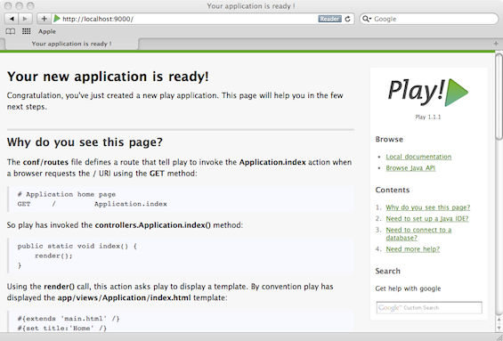
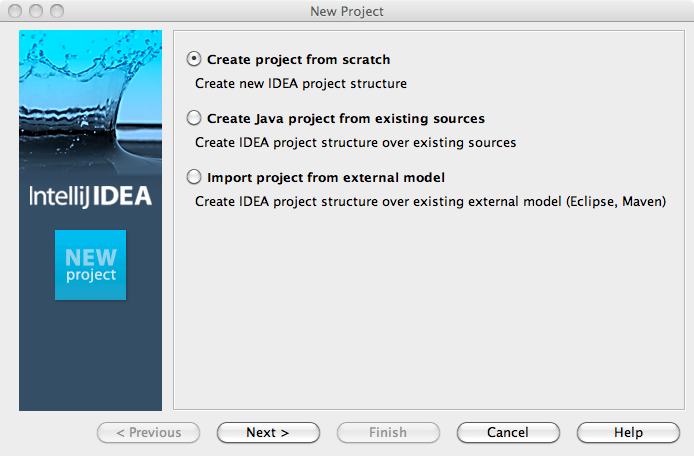
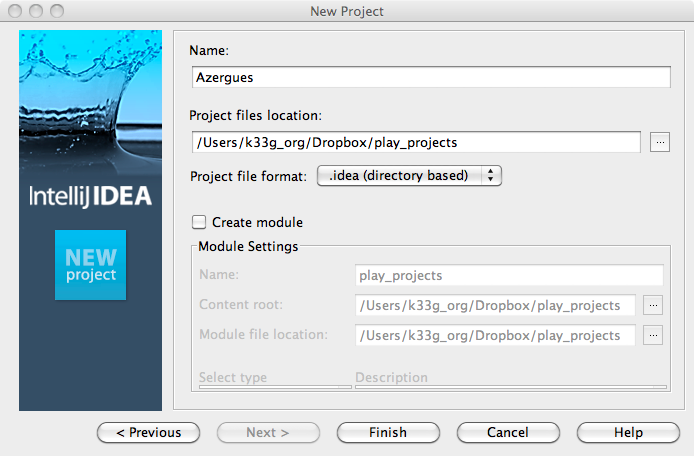
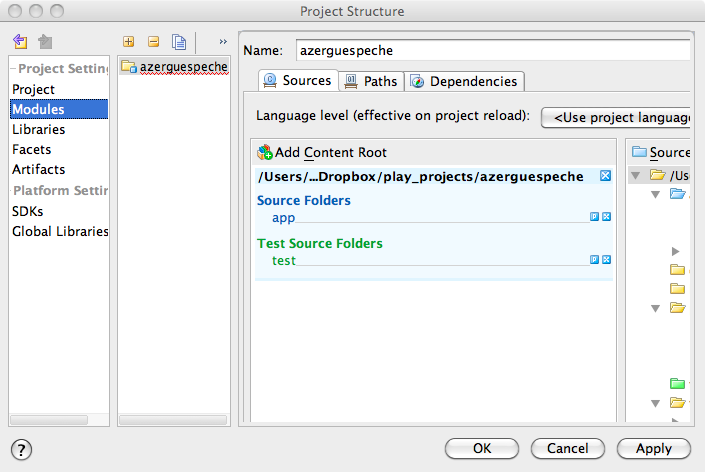
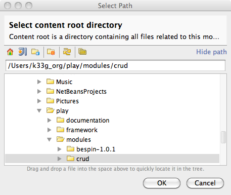
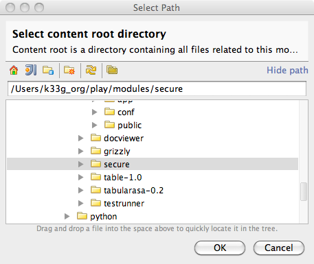
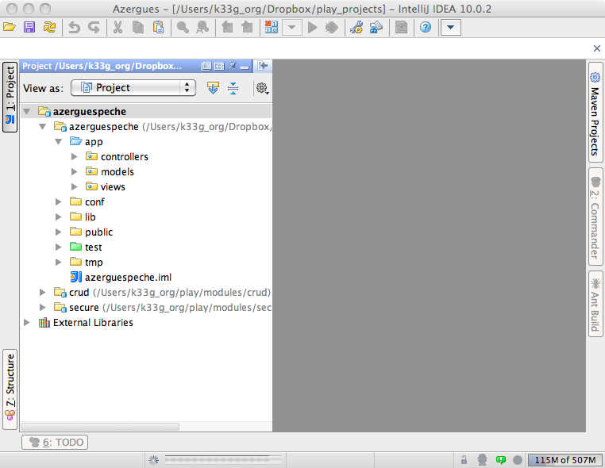
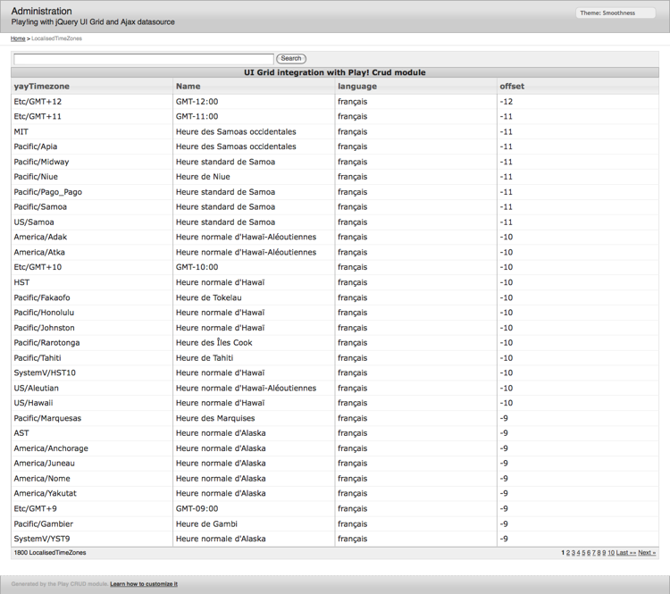

Un grand MERCI pour les participations de :
Ce livre est conçu et écrit par @k33g_org et @loic_d (nos petits noms sur Twitter). L'idée d'écrire cet ouvrage nous a été insufflée par @mklabs
De mémoire, car les choses sont allez finalement assez vite et j'ai une mémoire de poisson rouge. Cela faisait un moment que @loic_d me parlait de Play Framework, j'ai mis un peu de temps avant de me décider. Et là la révélation !, j'ai tellement été emballé, imaginez sortir une application web Java en 2 coups de cuillère à pot, moi le "vieux" geek de 42 balais nourri au Turbo Pascal et à VB6, issu du monde Microsoft (.Net et tout ce qui va avec), (phrase trop longue désolé) que j'ai décidé d'écrire des tutos sur mon blog au fur et à mesure de mon apprentissage. Un week-end @mklabs, qui passait par là, a relu ma prose (on fait ça de temps en temps pour voir si nos articles sont lisibles), du coup s'est mis aussi à Play!Framework, à la fin du même week-end, il était au taquet et nous lançait un défi (à @loic_d & à moi @k33g_org). "Debout les gars réveillez-vous, y va falloir en mettre un coup" (1) "Si vous écriviez un livre sur Play!?". Et voilà ... on y est.
Dans le désordre :
@k33g_org =
geek : true
age : 43
emplois :
actuellement :
poste : "Bid Manager"
employeur : "Steria"
avant : [
"Technico-commercial"
"Développeur"
"Responsable informatique"
"Chef de projet"
"Architecte"
"Directeur de projet"
"Directeur technique"
"Responsable avant-vente"
]
technos :
avant : ["Cobol", "Visual Basic", "Visual FoxPro", "DBase", "..."]
puis : ["Flash", ".Net", "..."]
maintenant : ["Java (Play)", "Javascript", "..."]
signeParticulier : ["Mac Addict", "SmartPhone Addict"]Tout simplement aux 2 autres singes, @loic_d parce qu'à défaut de ne plus pouvoir travailler professionnellement avec lui (et je vous garantie que c'est une chance), je vais pouvoir remettre ça sur ce projet, @mklabs dont l'enthousiasme sans limite me sidère et nous fait avancer (c'est à cause de lui que je lis tout ce que je peux sur le javascript)
La première réunion que nous avons organisé avec l'Alpes JUG (Java User Group grenoblois) était un coding dojo sur Play!► avec Guillaume Bort, l'auteur du framework. Ce jour là ce fût une vrai claque et cette présentation reste pour moi parmi les plus marquantes que j'ai pu voir. Guillaume nous a présenté non pas un simple framework mais une plateforme complète pour le développement et l’exécution d'applications Web. J'ai été extrêmement enthousiasmé par sa vision des architectures Web et de la sur-complexité vendue depuis des années par les éditeurs de middleware dans le monde Java... Depuis je n'ai pas arrêté de coder avec Play!► et d'écrire des article sur ce sujet pour mon blog CoffeeBean. Quand @mklabs nous a soumis l'idée d'écrire cet ebook, je ne pouvais pas refuser de travailler sur un sujet aussi excitant!
Pour coller à l'esprit de Play!►. Et aussi car je pense qu'avec un maximum de relecteurs et de contributeurs le résultat ne pourra être que meilleur!
Un geek, un fan de Java et depuis peu de Scala, aussi un musicien (guitare et un peu de batterie) à mes heures perdues. J'ai toujours préféré le développement backend au frontend (vive les services REST), mais je commence à prendre goût au développement JavaScript, notamment grâce aux bons conseils de @mklabs sur jQuery!.
Je ne vais pas être très original sur ce coup, comme @k33g_org je dédicace ce livre aux deux autres monkeys, sans qui ce projet ne pourrait se réaliser. Grâce à @k33g_org, j'ai d'excellents souvenirs des deux années que j'ai passé à Lyon : j'ai compris grâce à lui qu'on pouvait facilement mêler boulot et grosse déconnade! Quand à @mklabs, nous n'avons pas encore eu le temps de nous rencontrer physiquement au moment où j'écris ces lignes. Mais ça ne devrait pas tarder (la semaine prochaine normalement)!
Play Framework est une vraie révolution dans le monde des applications Web écrites en Java. Il vous fera oublier toutes les souffrances que vous avez pu vivre avec la pile Java EE classique, des frameworks comme Spring. Architectures techniques opaques, gestion chaotique des dépendances, longues phases de compilation, redémarrage du serveur à chaque modification du code... tout ça ne sera bientôt pour vous que de mauvais souvenirs :)
Play!► se base sur une architecture extrêmement simple en suivant le design pattern MVC. A côté de ça il ne rajoute pas de notions de couches service, couches DAO etc.
Tout le code métier est porté par les objets du modèle, afin d'éviter le phénomène appelé Anemic Domain Model, qui résulte en l'écriture de classes métier contenant uniquement des champs et des accesseurs (getters et setters), donc sans traitements ni intelligence. C'est ce qui arrive dès que l'on commence à implémenter le code métier de l'application dans des couches techniques (couches service, EJB...)
Comme en Ruby On Rails, les objets du modèle sont conçus selon le pattern Active Record : ils ont la capacité de gérer eux même leur persistance dans la base de données.
On peut par exemple écrire le code suivant pour manipuler une entité "Personne" :
// Si on voulait récupérer toutes les personnes
List<Personne> personnes = Personne.find("byName","Dupont").fetch();
// Récupérer la personne ayant l'id 1
Personne p1 = Personne.findById(1);
// Modification de l'entité
p1.firstName = "paul";
// Mise à jour dans la base de données
p1.save();Avec Play!►, il est extrêmement facile de faire correspondre des URL simples, lisibles et bookmarkables aux actions du controlleur.
Par exemple, pour afficher toutes les personnes habitant à Paris dans un annuaire, on pourra utiliser une URL comme
/annuaire/personnes/parisCeci est renforcé par l'aspect stateless du framework. Le serveur ne stockant pas d'état, on n'aura pas de mauvaise surprise quant au rendu correspondant à une URL : le framework effectuera toujours le même traitement quelque soit le contexte (voir paragraphe suivant).
Play!► se veut respectueux de l'architecture du Web et donc des architectures REST. Guillaume Bort a fait le choix de ne rien stocker côté serveur. Cela signifie qu'il n'existe pas de session utilisateur sur la partie serveur du framework. Ceci peut sembler déstabilisant lorsque l'on a l'habitude de travailler des frameworks comme JSF ou Wicket. Mais finalement ce mode de fonctionnement simplifie vraiment les choses. En effet on n'a pas besoin de gérer l'état du serveur, il ne fait que traiter les requêtes qui arrivent et renvoyer la réponse. Ceux qui ont déjà eu des problèmes avec Wicket et sa manie de tout garder en session, même les objets "out of date" comprendront ce que je veux dire. Notre framework propose un objet "session" qui permet de stocker un identifiant de session utilisateur en écrivant dans un cookie côté client (dans le navigateur). Pour stocker des volumes plus importants de données côté client, vous serez incité à utiliser les API de stockage de HTML 5 (web storage). Si pour des raisons de performances vous ne voulez pas répéter trop souvent les mêmes requêtes vers la base de données, il est également possible d'utiliser un cache distribué. Play!► fournit une implémentation de cache par défaut.
Une autre conséquence de ce mode stateless est bien sur la capacité à monter en charge (scalabilité). Si le trafic de votre application augmente, il suffira de rajouter un serveur derrière un load balancer pour tenir la charge. Ceci prend tout son sens dans les environnements de type cloud ou des noeuds de serveurs peuvent être ajoutés et retirés dynamiquement selon la demande. Autre avantage : la tolérance aux pannes. Si un serveur tombe en panne, les appels pourront passer sur un autre serveur sans que l'utilisateur ne s'en rende compte. Avec des framework stateful, vous seriez obligé de dupliquer les sessions utilisateurs d'un serveur à l'autre pour que les utilisateurs ne perdent pas leur contexte de travail.
Toute la pile est pré-configurée, de la vue à la base de données. Play!► suit la logique de convention over configuration. Ainsi, si le paramétrage par défaut vous convient, vous pourrez commencer à développer dès que vous aurez dézippé l'archive du framework! Ce principe sera également appliqué lors du développement de nos applications afin d'économiser des lignes de code tout au long du développement.
Play!► embarque son propre serveur qui est capable de compiler lui même les fichiers source et de récupérer à chaud toutes les modifications de code. Vous n'aurez donc jamais à vous soucier des phases de compilation ou de déploiement de votre application. Si vous ajoutez une nouvelle ligne de code, un simple "refresh" dans votre navigateur vous permettra de la voir en action. Et si jamais votre code contient une erreur, vous verrez un message clair et explicite dans votre navigateur, bien plus simple à comprendre que les traditionnelles stack trace que l'on rencontre habituellement lorsque l'on fait du développement JEE.
Enfin, le framework propose nativement un module CRUD permettant de générer les écrans, les traitements et les requêtes pour gérer les opération basiques relatives à une entité métier (création, lecture/recherche, mise à jour, suppression).
Il existe un grand nombre de modules pour ajouter des fonctionnalités au framework : déploiement sous Google APP Engine, authentification avec OAuth, validation des données côté client avec HTML5... La communauté est très active et de nouveaux plugins arrivent régulièrement dans le dépôt officiel.
De plus le framework, bien que full stack, n'est pas monolithique, il est possible de n'utiliser que les parties de Play!► qui nous intéresse et de l'utiliser conjointement à d'autres technologies. On pourrait par exemple imaginer n'utiliser que la partie contrôleur de Play!► pour exposer des services REST à un front end écrit en HTML/JavaScript et s'appuyer sur des services Spring pour la partie métier.
Play!► est écrit en Java et est compatible avec toutes vos librairies Java préférées. De plus il facilite l'utilisation de Java grâce à un certain nombre d'astuces.Il génère par exemple automatiquement les accesseurs (getters et setters) dans les classes Java dans le but d'améliorer la lisibilité du code.
Les exemples suivants sont tirés du site officiel de Play!► et montrent en quelques lignes l'esprit et la simplicité du framework.
L'URL suivante /articles/archive?date=08/01/08&page=2
permettra de consulter les articles que vous avez demandé en ajoutant des paramètres ayant le même nom dans une méthode Java :
public static void archive(Date date, Integer page) {
List<Article> articles = Article.fromArchive(date, page);
render(articles);
}Le binding intelligent fonctionne avec n'importe quelle classe :
public class Person {
public String name;
public Integer age;
}Une simple action dans le contrôleur permet d'ajouter une personne :
public static void add(Person p) {
p.save();
}Ce formulaire HTML définie les champs correspondant à la classe Person et permet d'appeler notre méthode add :
<form action="/Directory/add" method="POST">
Name: <input type="text" name="p.name" />
Age: <input type="text" name="p.age" />
</form>Play!► n'a pas besoin de l'équivalent de la directive forward de Servlet pour la redirection vers d'autres actions. Il suffit d'appeler la bonne méthode dans le code Java :
public static void show(Long id) {
Article article = Article.findById(id);
render(article);
}
public static void edit(Long id, String title) {
Article article = Article.findById(id);
article.title = title;
article.save();
show(id);
}Comme vous le voyez, à la fin de l'action edit, on se redirige vers l'action show!
Dans les templates, on peut utiliser une syntaxe équivalente pour générer un lien :
<a href="@{Article.show(article.id)}">${article.title}</a>
That will generate the following HTML:
<a href="/articles/15">My new article</a>Dans la plupart des frameworks Java, pour passer des objets au moteur de template vous devrez utiliser une syntaxe comme :
Article article = Article.findById(id);
User user = User.getConnected();
Map<String, Object> model = new HashMap<String,Object>();
model.put("article", article);
model.put("user", user);
render(model);Avec Play!►, il suffit d'écrire :
Article article = Article.findById(id);
User user = User.getConnected();
render(article, user);Et vous pourrez récupérer les objets à partir de leur nom dans le template. Encore des lignes de code gagnées!
Il est vraiment facile d'utiliser l'API de mapping objet/relationnel JPA avec Play!►. Rien à configurer, il synchronisera la base (également configurée et démarrée automatiquement en mode développement) avec vos objets.
En plus, si vous utilisez la classe Model de Play!►, le code sera encore simplifié :
public void messages(int page) {
User connectedUser = User.find("byEmail", connected());
List<Message> messages = Message.find(
"user = ? and read = false order by date desc",
connectedUser
).from(page * 10).fetch(10);
render(connectedUser, messages);
}Le formulaire HTML :
<form action="@{Article.uploadPhoto()}" method="POST" enctype="multipart/form-data">
<input type="text" name="title" />
<input type="file" id="photo" name="photo" />
<input type="submit" value="Send it..." />
</form>Et le code Java :
public static void uploadPhoto(String title, File photo) {
...
}Comment faire plus simple?
Tout ce qui va se dire ici doit être oublié une fois que vous passerez au chapitre 1. Le chapitre "zéro" n'est là que pour désacraliser la bête. Vous ne vous sentez pas à l'aise avec le développement web en java, le pattern MVC vous donne des boutons (faut reconnaître qu'une indigestion de Struts c'est moyen), écrire des requêtes SQL vous angoisse, vous êtes débutant etc. ... Mais vous voulez vous y coller tout de suite (l'est-y pas tout plein de motivation !). Et bien, ce chapitre est pour vous (vous allez très vite comprendre pourquoi)
On l'a déjà dit dans l'intro ! Mais je vous donne ma définition : "c'est le moyen de se la jouer rapidement en java-web, alors que l'on n'est pas forcément le meilleur de l'équipe"
Lorsque vous aurez lu les chapitres du niveau supérieur et passé tous les boss de fin de niveau, vous verrez aussi que c'est un excellent framework qui vous permet de pondre des applications web de qualité, robustes, maintenables, "scalables" ... (Oh p... j'ai l'impression de répondre à un appel d'offre). Mais ça c'est pour mes petits camarades @loic_d et @mklabs. Du coup vous aurez compris que c'est moi qui ne suis pas le meilleur de l'équipe ;)
Nous allons voir comment :
Vous devez avoir installé Java sur votre joujou préféré.
Si vous ne savez pas faire, créez une "issue" sur le repository git du bouquin : https://github.com/3monkeys/play.rules/issues, ça veut dire que c'est utile à rajouter dans le bouquin.
sous windows ça devrait donner ceci : (dans les variables utilisateur) si vous avez dézippé dans C:
créer PLAY_HOME = C:\play
ajouter %PLAY_HOME% au path : PATH = C:\bla bla bla;%PLAY_HOME%sous OSX, ceci
sudo pico ~/.bash_profile
PLAY_HOME=/Users/ton_user_name/play; export PLAY_HOME
export PATH=$PATH:$PLAY_HOMEsous Linux, c'est presque comme sous OSX (on devrait dire l'inverse, non? )
cd /opt
sudo unzip ~/Téléchargements/play-x.y.z.zip
sudo ln -s play-x.y.z play
cat >> ~/.profile <<+EOF
#Play! config
PLAY_HOME=/opt/play; export PLAY_HOME
export PATH=\$PATH:\$PLAY_HOME
+EOFen mode commande : tapez play pour voir. Si tout va bien, vous aurez ceci :
~ _ _
~ _ __ | | __ _ _ _| |
~ | '_ \| |/ _' | || |_|
~ | __/|_|\____|\__ (_)
~ |_| |__/
~
~ play! 1.2.1, http://www.playframework.org
~
~ Usage: play cmd [app_path] [--options]
~
~ with, new Create a new application
~ run Run the application in the current shell
~ help Show play help
~Remarque : En ce qui me concerne, je fais toutes les manipulations sous OSX, mais globalement la logique est la même sous Linux ou Windows. Si vous avez un soucis, créez une "issue" sur le repository git du bouquin : https://github.com/3monkeys/play.rules/issues.
Ou comment je vais être hors sujet pendant quelques minutes ... Imaginons ...
Vous êtes Philou, chef de projet technique dans une cht'ite SSII parisienne, plutôt orienté (vous) technologies .Net. Pour des raisons personnelles (Dulcinée, marre de Panam, du RER, ...) vous décidez de retourner à la campagne (euh en province pardon) et intégrez une agence régionale d'une grande SSII nationale.
Lui : Tu sais, Philou, chez nous on est tous ingés, car on doit savoir tout faire, et on est tour à tour Chef de projet, architecte, développeur, ...
Vous : Ah c'est pour ça que sur mon contrat de travail il y a marqué ingénieur d'études ?
Lui : Exactement ! Je suis content que tu adhères à notre façon de penser, c'est très corporate, notre collaboration va être particulièrement entrichissante.
Vous : ...
Lui : Par contre en ce moment nous n'avons pas de missions .Net, tu sais ce qui est porteur chez nos clients, c'est Java. Et à ce titre, je souhaiterais que tu sois formé à Java. Tu n'y vois pas d'inconvénient ?
Vous : Bien au contraire ! [Motivation mal dissimulée] Et chez vous, les formations sont faites en interne ou par le biais d'un organisme ?
Lui : Philou, par expérience, la formation la plus efficace, c'est l'autoformation, c'est de cette manière que tu retiendras le mieux les choses.
Vous : ... [je suis un lapin de 6 semaines et j'aime ça]
Lui : Allez pas de chichi entre nous, je vais être sympa, tu peux faire ton intercontrat chez toi, tu seras plus tranquille, tu as un PC bien sûr ? Au fait tu pourrais poser des jours de congés par anticipation ? Genre je te permet de faire 5 jours en interco à la maison et toi tu fais le 2ème pas, tu poses 5 jours supplémentaires ?
Vous : Non. Je vous demande même pas si vous avez des bouquins sur Java ?
Lui : Non, ne demande pas. Allez, je t'appelle dès qu'une mission en adéquation avec ton profil se présente.
Et les semaines, mois, ... passent à apprendre Java à la terrasse du café en face de chez vous, le tout entrecoupé de quelques missions à forte valeur ajoutée autour de technologies d'avenir telles MS Access, Delphi, ...
Toute ressemblance avec des personnages existants serait totalement fortuite.
Bon, apprendre Java tout seul, bof ... C'est le printemps, vous êtes dans une région magnifique où le réseau halieutique (les rivières, les étangs, ...) est très riche. Grande décision : vous avez décidez de vous mettre à la pêche "sportive" et f#%$ Java ! C'est parti pour les grandes balades au bord de l'eau.
Après quelques jours sur le même spot, vous faites la connaissance de Julo qui fait partie de l'amicale des pêcheurs de l'Azergues. Quelques canettes de bières plus tard, vous tentez d'expliquer à Julo ce qu'est un ingénieur informaticien. C'est à ce moment là qu'il sort "La Poire Maison" de sa besace car ça y'est vous êtes "potes de pêche". 1 heure après vous êtes LA PERSONNE qui va faire le site web de gestion des prises de pêches des concours de l'amicale des pêcheurs de l'Azergues et en Play!► bien sûr. Rendez-vous, donc, dimanche au local de l'amicale pour établir les spécifications, capturer les besoins, définir les exigences utilisateurs (eh oui, moi la poire ça me rend loquace)
Plusieurs fois par an, l'amicale des pêcheurs de l'Azergues organise un concours de pêche. L'amicale souhaiterait pouvoir gérer les inscrits et leurs prises lors de chacun des concours. C'est court (eh oui le client n'est pas mature dans l'expression de ses besoins), mais ça sera suffisant pour la création de notre application.
Maintenant, j'arrête de délirer et nous repassons à la technique.
Nous avons donc installé Play, nous allons commencer à bosser :
sous OSX :
mkdir play_projects
cd play_projectssous Windows :
md c:\play_projects
cd c:\play_projectssous Linux :
mkdir ~/play_projects
cd ~/play_projects
- En mode commande, taper
play new azerguespecheoù "azerguespeche" est le nom de notre application si tout va bien, ceci devrait s'afficher :
~ _ _
~ _ __ | | __ _ _ _| |
~ | '_ \| |/ _' | || |_|
~ | __/|_|\____|\__ (_)
~ |_| |__/
~
~ play! 1.2.1, http://www.playframework.org
~
~ The new application will be created in /Users/k33g_org/Dropbox/play_projects/azerguespeche
~ What is the application name? [azerguespeche]
- Valider. Si tout va bien, ceci devrait s'afficher :
~
~ OK, the application is created.
~ Start it with : play run azerguespeche
~ Have fun!
~Lancer l'application : `play run azerguespeche', vous allez obtenir dans la console :
~ _ _
~ _ __ | | __ _ _ _| |
~ | '_ \| |/ _' | || |_|
~ | __/|_|\____|\__ (_)
~ |_| |__/
~
~ play! 1.2.1, http://www.playframework.org
~
~ Ctrl+C to stop
~
Listening for transport dt_socket at address: 8000
05:44:38,610 INFO ~ Starting /Users/k33g_org/Dropbox/play_projects/azerguespeche
05:44:40,219 WARN ~ You're running Play! in DEV mode
05:44:40,357 INFO ~ Listening for HTTP on port 9000 (Waiting a first request to start) ...lancer le navigateur : http://localhost:9000/

Wouaaoo ! Vous êtes trop forts, on va bientôt pouvoir commencer.
si rien ne répond sur le port par défaut (9000), c'est peut-être que le port est déjà utilisé par une autre application. Dans ce cas, la commande 'play run azerguespeches' s'est terminée avec le message suivant :
22:35:07,352 ERROR ~ Could not bind on port 9000Alors, rechercher ceci dans dans le fichier 'conf/application.conf' (1) du projet :
# Server configuration
# ~~~~~
# If you need to change the HTTP port, uncomment this (default is set to 9000)
# http.port=9000activer la ligne # http.port=9000 en enlevant # et en remplaçant 9000 par un autre port, non utilisé celui-ci.
En ce qui concerne l'IDE, vous pouvez très bien utiliser un simple éditeur de code avec colorisation syntaxique (Vous avez par exemple KomodoEdit qui fonctionne sur toutes les plateformes qui est assez sympa ... et open-source), mais c'est vraiment si vous voulez vous la jouer en démo ou que vous connaissez Java par coeur ou que vous codez sur un eeepc 701.
Play!► propose les commandes nécessaires pour transformer votre projet en projet Eclipse, NetBeans ou IntelliJ. Je suis particulièrement accro à NetBeans, mais pour avoir utilisé la version Community d'IntelliJ (Win, Tux, OSX), je vous conseille fortement de choisir cet IDE, étant donné que la version open source suffit largement pour faire du Play!, pourquoi se priver ?
Voyons donc comment faire pour transformer notre squelette d'application en projet IntelliJ (bien sûr vous avez téléchargé IntelliJ : http://www.jetbrains.com/idea/) :
Control+c dans la console pour quitterEn mode commande : play idealize azerguespeche (pour NetBeans ça serait play netbeansify azerguespeche)
~ _ _
~ _ __ | | __ _ _ _| |
~ | '_ \| |/ _' | || |_|
~ | __/|_|\____|\__ (_)
~ |_| |__/
~
~ play! 1.2.1, http://www.playframework.org
~
~ OK, the application is ready for Intellij Idea
~ Use File/New Module/Import Existing module
~Puis on lance IntelliJ et on fait les manipulations suivantes :

Azergues et l'endroit où vous souhaitez le sauvegarder, puis clickez sur Finish :
Modules+ en haut (un peu) à gauche
Import existing moduleazerguespeche.iml (qui a été généré par Play!► lors de la commande play idealize azerguespeche)Finish 
SourcesAdd Content Root. Nous allons ajouter les dépendances à certains modules embarqués dans Play!►.
CRUD (présent dans le répertoire d'installation de Play!►). Ce module nous permettra de générer automatiquement des écrans de saisie et de visualisation.
Secure (présent dans le répertoire d'installation de Play!►). Ce module nous permettra de gérer facilement l'authentification.


Voilà, nous sommes prêts à démarrer, nous pouvons passer à l'étape suivante. Rendez-vous donc au chapitre suivant : ch02-Premiere-application.
Control+c dans la console pour quitterEn mode commande, placez vous dans votre répertoire "workspace" d'Eclipse
cd C:\dev\workspaceEn mode commande : play eclipsify azerguespeche (ou bien le raccourci play ec azerguespeche)
~ _ _
~ _ __ | | __ _ _ _| |
~ | '_ \| |/ _' | || |_|
~ | __/|_|\____|\__ (_)
~ |_| |__/
~
~ play! 1.2.3, http://www.playframework.org
~
~ OK, the application is ready for eclipse
~ Use File/Import/General/Existing project to import C:\dev\workspace\azerguespeche into eclipse
~
~ Use eclipsify again when you want to update eclipse configuration files.
~ However, it's often better to delete and re-import the project into your workspace since eclipse keeps dirty caches...
~Puis on lance Eclipse et on fait les manipulations suivantes :
Browse...azerguespeche. Une fois terminé, cliquer sur le bouton Finish
Pour lancer (ou debugger) l'application ou les tests depuis Eclipse, on fait un clic droit sur les fichiers .run dans le répertoire eclipse du projet, puis on sélectionne l'action run as (ou debug as) dans le menu contextuel.
Voilà, nous sommes prêts à démarrer, nous pouvons passer à l'étape suivante.
Dans ce chapitre nous allons :
ces bases seront suffisantes pour avoir quelque chose qui tourne à montrer à nos copains les pêcheurs.
Remarque : si ça vous ennuie, il est tout à fait possible de passer au § suivant
Alors, avant de remettre les mains dans le code, nous allons parler théorie. Et plus particulièrement "design pattern" (definition ici : http://fr.wikipedia.org/wiki/Design_pattern (1)) et encore plus particulièrement : pattern MVC, sûrement le pattern que j'ai le plus détesté, que j'ai trouvé être le pattern le plus crétin et le plus improductif de l'histoire des patterns.
Je m'explique, j'étais architecte .Net (v° 1.1), fan invétéré du modèle évènementiel d'ASP.Net (2) et en changeant de boîte (celle dont je parlais dans le chapitre précédent), j'ai hérité du pilotage d'une TMA Java avec des applications Web. Mon nouveau boss m'a dit : "Tu n'es pas là pour coder, tu es là pour faire du management et de la relation client, donc pas besoin de connaître Java", Moi (dans ma tête) : "wahouuu, trop sympa, ... mais en même temps, l'équipe va me prendre pour un c...".
Ca n'a pas loupé, dès le 1er jour :
(ndla : on est lundi)Je vous épargne la suite. Les anciens (la meilleure équipe que j'ai pu avoir (3)) de ce projet reconnaitront sûrement la personne à laquelle je fais allusion.
... bon j'en étais où ?
Ah oui, c'est alors que je décide de me mettre sérieusement à Java, et surtout de prendre les choses à l'envers et de brillamment m'auto-former à STRUTS (achat de bouqins, etc. ...) d'urgenge, car 5 jours pour une f@&%ing login box, ça me fait mal.
STRUTS c'est (c'était?) le framework web Java par excellence qui met en oeuvre le pattern MVC : Modèle Vue Contrôleur (Model View Controller). Il permet de séparer les responsabilités en 3 couches (m... j'en avais 5 moi ...) :
Et là c'est le drame ! Après avoir passé le cap de l'installation de mon serveur d'application (ça a bien changé maintenant, mais quand en plus on est habitué à IIS ...), après avoir installé et paramétré tous les bons plugins Eclipse, ce fut le 1er contact avec STRUTS.
Alors je ne suis pas complètement idiot, j'ai codé mes 1ers écrans et ma mire de login (en passant il ne faut pas 5 jours), mais alors qu'est ce que j'ai trouvé ça fastidieux et inutile ! Je ne sais combien de fichier pour un seul écran! STRUTS pas pour moi! (et là je suis tombé amoureux des JSF, si !).
Et bien vous allez voir (pour ceux qui ne connaissent pas) que :
Dans le chapitre précédent, nous avons initialisé notre application AzerguesPeche, il est temps maintenant de coder notre première page en mode MVC, comme ça après on n'en parle plus de MVC. Ami lecteur-codeur-newbee, prépare toi à entrer dans le monde de Java + WEB sans mal ni effort avec Play Framework (si c'est pas un slogan de bouqin ça!).
play run azerguespeche)Dans IntelliJ vous pouvez voir dans l'arborescence de votre projet que vous avez plusieurs répertoires :
- azerguespeche
- app
- controllers
- models
- views
- Applicationcréeons un premier modèle version dans le répertoire models :
package models;
public class Version {
public String reference;
public String name;
public Version() {
this.reference="v° zero";
this.name="proto pour les copains";
}
}Remarque : vous pouvez voir qu'il n'y a pas de getter ni de setter, juste des "champs" publiques. Dans la majeure partie des cas vous n'en n'avez pas besoin, alors à quoi bon ? Sachez cependant que Play!► va les générer lui même à la compilation (vous ne verrez rien dans le code). Au besoin vous pouvez les écrire vous même si nécessaire.
Cette fois-ci nous allons modifier le contrôleur Application dans le répertoire controllers :
Si vous n'avez touché à rien vous devez avoir le code suivant :
package controllers;
import play.*;
import play.mvc.*;
import java.util.*;
import models.*;
public class Application extends Controller {
public static void index() {
render();
}
}Modifions la méthode index() :
public class Application extends Controller {
public static void index() {
Version version = new Version();
render(version);
}
}index.html du répertoire views/Application/Vous devez avoir le code suivant :
#{extends 'main.html' /}
#{set title:'Home' /}
#{welcome /}Que vous allez remplacer par :
#{extends 'main.html' /}
#{set title:'Azergues Pêche' /}
<B>Version : ${version.reference} ${version.name}</B>Remarque : #{extends 'main.html' /} signifie que index.html hérite de main.html (si vous allez regarder dans main.html, vous verrez que c'est là que sont déclarées les ressources css, js, etc. ...)
Remarque bis : Que vient-on de faire ?, eh bien, lorsque nous allons nous connecter, le contrôleur Application va instancier le modèle Version qui sera affiché dans la vue Application(index.html) grâce à la méthode render(version) utilisée dans le contrôleur.
Si c'est vrai ! Vous n'avez qu'à appeler l'url http://localhost:9000/ dans votre navigateur :

Et là je sens que une pointe de fierté et de satisfaction monter en vous ... non ???
Donc, comme vous venez de le voir, faire discuter un contrôleur avec un modèle et une vue, ça n'a rien de bien compliqué, surtout avec Play!►. Là sans vous en aperçevoir, vous avez compris MVC.
Question :
Allez ouvrir le fichier routes dans répertoire conf de votre projet, il contient le code suivant :
# Routes
# This file defines all application routes (Higher priority routes first)
# ~~~~
# Home page
GET / Application.index
# Map static resources from the /app/public folder to the /public path
GET /public/ staticDir:public
# Catch all
* /{controller}/{action} {controller}.{action}En fait la ligne :
# Home page
GET / Application.indexexplique que quand on appelle la racine du site dans l'url (le "/" tout seul), alors on ouvre la page index.html du répertoire Application (c'est une convention)
Où nous allons créer les bases d'Azergues Pêche grâce au module CRUD de Play
c'est dans le chapitre suivant : ch03-Premiere-application-CRUD.
- (1) : oui, je sais, ce n'est pas la meilleure source d'information qui soit, ni la plus fiable, mais bon ... n'hésitez pas à poster vos définitions dans les "issues" du projet : https://github.com/3monkeys/play.rules/issues. - (2) : je le suis encore un peu, je dois l'avouer, mais on ne se refait pas. - (3) : sans aucune ironie
Dans ce chapitre nous allons :
Et tout ceci facilement et rapidement
chercher dans /conf/application.conf ceci :
# Database configuration
# ~~~~~
# Enable a database engine if needed.
#
# To quickly set up a development database, use either:
# - mem : for a transient in memory database (HSQL in memory)
# - fs : for a simple file written database (HSQL file stored)
# db=memactiver la ligne # db=mem en enlevant # et remplaçant mem par fs
C'est quoi CRUD ?, alors déjà, ça veut dire Create Read Update Delete, le module CRUD de Play!► va permettre de générer automatiquement pour vous les écrans de saisie des données à partir de votre modèle objet avec toute la mécanique qui va bien pour sauvegarder vos modifications. Je n'en dis pas plus, les exemples qui vont suivre parleront d'eux-même.
Donc pour activer le module CRUD :
/azerguespeche/conf/application.confajouter ceci :
# Import CRUD module
module.crud=${play.path}/modules/crud/azerguespeche/conf/routesajouter ceci :
# Import CRUD routes
* /admin module:crudEt ceci : juste après GET / Application.index
GET /admin module:crud`Note : on vient d'expliquer à Play!► que l'on utilise le module CRUD lorsque l'on utilise l'url http://localhost:9000/admin/
Avant de continuer, arrêtez puis relancez votre application :
donc avec la commande : play run azerguespeche en mode console.
Vous devriez voir apparaître un message du type : 07:48:26,643 INFO ~ Module crud is available (/Users/k33g_org/play/modules/crud)
Pour se mettre en jambes nous allons créer des pêcheurs et des poissons. les sources des classes vont ici /azerguespeche/app/models/, (donc dans IntelliJ, vous faites un click-droit sur le répertoire models + new + Java Class)
aura le code suivant :
package models;
import javax.persistence.*;
import play.db.jpa.*;
@Entity
public class Pecheur extends Model{
public String identifiant;
public String nom;
public String prenom;
public Pecheur(){
}
/*ce constructeur n'est pas obligatoire, c'est pour plus tard*/
public Pecheur(String identifiant, String nom, String prenom) {
this.identifiant = identifiant;
this.nom = nom;
this.prenom = prenom;
}
}Note : tous les modèles sont précédés par l'annotation @Entity, cela permet à Play!► de savoir que c'est un modèle qui sera "persistable" en base de données.
Note bis : tous les modèles héritent de la classe Model, ce qui leur affecte différents "comportements", comme la méthode save().
Note (encore) : vous pouvez remarquer que l'on n'utilise pas de getter ni de setter, mais directement des champs publiques, Play!► s'occupera de les générer à la compilation.
package models;
import javax.persistence.*;
import play.db.jpa.*;
@Entity
public class Poisson extends Model{
public String identifiant;
public String nom;
public Poisson() {
}
/*ce constructeur n'est pas obligatoire, c'est pour plus tard*/
public Poisson(String identifiant, String nom) {
this.identifiant = identifiant;
this.nom = nom;
}
}ça c'est fait.
/azerguespeche/app/controllers/ créer les 2 classes "controllers" correspondant à nos 2 classes "models" précédentespour info le contrôleur de Pecheur.java s'appellera Pecheurs.java (c'est la norme, on parle aussi de conventions)
Vous allez voir, c'est tout simple avec le mode CRUD :
package controllers;
import play.*;
import play.mvc.*;
public class Pecheurs extends CRUD {
} package controllers;
import play.*;
import play.mvc.*;
public class Poissons extends CRUD {
}C'est tout ?!? ... Ben voui ! C'est pas la classe ça ?
Vérifions quand même : http://localhost:9000/admin/, et là vous devriez avoir l'écran suivant :
Pour être plus sûr : clickez sur "add" à droite, sur la ligne "Pêcheur", nous allons ajouter quelques "amis pêcheurs" :
PecheurCréons encore 2 pêcheurs ... : loic_d et mklabs
Si vous revenez à la liste des pêcheurs (clickez sur pecheurs en haut : Home > Pecheurs) vous obtenez ceci et c'est laid ! :
Nous allons nous contenter de rajouter (surcharger en fait) la méthode toString() de nos 2 modèles
@Override
public String toString() {
return identifiant+" : "+nom+" "+prenom;
} @Override
public String toString() {
return identifiant+" : "+nom;
}Raffraichissez la page :
C'est mieux, non ?
Nous allons créer quelques poissons, mais avant de continuer ...
Tout simplement en utilisant l'annotation @Required au dessus des champs obligatoires (dans notre classe Poisson) et en ajoutant la référence suivante dans le code de la classe : import play.data.validation.Required;, nous aurons donc le code suivant :
package models;
import javax.persistence.*;
import play.data.validation.Required;
import play.db.jpa.*;
@Entity
public class Poisson extends Model{
@Required
public String identifiant;
@Required
public String nom;
public Poisson() {
}
public Poisson(String identifiant, String nom) {
this.identifiant = identifiant;
this.nom = nom;
}
@Override
public String toString() {
return identifiant+" : "+nom;
}
}Note : faite donc la même chose pour la classe Pecheur, ça sera fait
Vérifions si cela fonctionne en allant créer quelques poissons :
Vous pouvez déjà remarquer que l'annotation "Required" apparaît en dessous des champs de saisie. Essayez de sauvegarder sans avoir rien saisi :
Play!► vous affiche un message d'erreur, et où sont les champs obligatoires, tout ça juste avec une simple annotation !
Bon, maintenant, il faut les saisir ces poissons ...
Vous pouvez aussi déclarer qu'un type de format est nécessaire comme l'e-mail, un chiffre, etc. ... Pour cela allons modifier la classe Pecheur en ajoutant un champ email et un champ département.
@Email (la référence à déclarer dans le code sera : import play.data.validation.Email;)Integer suffitLe code de notre classe Pecheur va ressembler à ceci :
package models;
import javax.persistence.*;
import play.data.validation.Email;
import play.data.validation.Required;
import play.db.jpa.*;
@Entity
public class Pecheur extends Model{
@Required
public String identifiant;
@Required
public String nom;
@Required
public String prenom;
@Email
public String email;
public Integer departement;
public Pecheur(){
}
public Pecheur(String identifiant, String nom, String prenom) {
this.identifiant = identifiant;
this.nom = nom;
this.prenom = prenom;
}
@Override
public String toString() {
return identifiant+" : "+nom+" "+prenom;
}
}Vous pouvez remarquer que le formulaire précise qu'il souhaite une adresse mail valide pour l'email et une valeur de type numérique pour le département.
Soyons donc débile :
Eh oui, Play!► propose bien un module "anti-débile" et vous explique ce qu'il faut saisir avant d'enregistrer.
Je ne sais pas si vous avez vu, mais dans les pages du module CRUD il y a un "petit" module de recherche, on l'essaie ? En images :
Plutôt sympa, vous n'avez rien eu à coder pour ça :)
Vous avez aussi noté (j'espère) que toutes les modifications apportées aux classes modèles étaient répercutées à la fois sur la partie base de données et la partie affichage, et tout cela sans gros effort.
Nous verrons comment :
c'est dans le chapitre suivant : ch04-Premiere-application-CRUD-part2.
Vous n'avez pas encore le statut "demi-dieu" de la programmation Web en java (1), mais je sens déjà quelque chose frétiller en vous :) Non ? Vous avouerez que pour le moment c'est assez facile et sans effort et pourtant ça a déjà de la gueule. J'espère que cela vous donne envie de continuer.
- (1) : ne vous inquiétez pas, je n'ai pas cette prétention non plus ;), mais nous allons progresser ensemble
Dans l'épisode précédant nous avons initié notre application grâce au module CRUD. Cette fois ci nous allons aller un peu plus loin. Nous verrons comment "franciser" notre site, comment lier les modèles et enfin modifier nos formulaires (enfin un formulaire).
Dans application.conf cherchez le texte suivant :
# i18n
# ~~~~~
# Define locales used by your application.
# You can then place localized messages in conf/messages.{locale} files
# application.langs=fr,en,jaAjoutez à la suite la ligne suivante :
application.langs=frCréer un fichier messages.fr dans le répertoire conf de l'arborescence du projet
Puis, toujours dans le fichier application.conf, cherchez le texte suivant : (en général c'est juste après)
# Date format
# ~~~~~
date.format=yyyy-MM-dd
# date.format.fr=dd/MM/yyyyTransformez moi ça en :
# Date format
# ~~~~~
date.format=yyyy-MM-dd
date.format.fr=dd/MM/yyyyNous venons d'expliquer à Play que notre locale est française, et nous avons précisé le format de date, cela aura donc une incidence sur les écrans de saisie.
Nous allons créer des compétitions, qui serviront à enregistrer les prises faites par chacun des pêcheurs. Je ne vais pas gérer les inscriptions, on dit que l'on saisit uniquement les pêcheurs et leurs prises lors des compétitions.
Nous aurons donc : une compétition est composée de prises, une prises c'est un poisson pris par un pêcheur.
Créer les 2 Classes Competition et Prise dans le répertoire models :
package models;
import javax.persistence.*;
import play.data.validation.Required;
import play.db.jpa.*;
import java.util.ArrayList;
import java.util.Date;
import java.util.List;
@Entity
public class Competition extends Model {
@Required
public String nom;
@Required
public Date date;
/*Il y a plusieurs prises dans une compétition
on fait le lien avec la propriété 'competition' de la classe Prise
*/
@OneToMany(mappedBy="competition", cascade=CascadeType.ALL)
public List<Prise> prises = new ArrayList();
public Competition() {
}
public Competition(String nom, Date date) {
this.nom = nom;
this.date = date;
}
@Override
public String toString() {
return nom + " : " + date;
}
} package models;
import javax.persistence.*;
import play.data.validation.Required;
import play.db.jpa.*;
@Entity
public class Prise extends Model {
/* une prise est faite par un seul pêcheur */
@OneToOne
@Required
public Pecheur pecheur;
/* on ne prend qu'un seul poisson à la fois */
@OneToOne
@Required
public Poisson poisson;
/* plusieurs prises dans une compétition
cette prise appartient à 1 seule compétition
*/
@ManyToOne
@Required
public Competition competition;
public Prise() {
}
public Prise(Pecheur parQui, Poisson poissonPris, Competition pendantCompetition) {
this.pecheur = parQui;
this.poisson = poissonPris;
this.competition = pendantCompetition;
}
@Override
public String toString() {
return "Prise{" +
"par : " + pecheur.nom +" " + pecheur.prenom +
", poisson : " + poisson.nom +
", pendant : " + competition.toString() +
'}';
}
}Remarque : nous venons d'utiliser des annotations JPA pour "lier" nos modèles : @OneToOne, @ManyToOne, @OneToMany ... Vous pouvez trouver une description de ces annotation ici http://www.oracle.com/technetwork/middleware/ias/toplink-jpa-annotations-096251.html
Il n'y a pas grand chose à écrire, mais sans ça cela ne fonctionnera pas.
Donc tout bêtement, créer les 2 Classes Competitions et Prises dans le répertoire controllers :
package controllers;
import play.*;
import play.mvc.*;
public class Competitions extends CRUD {
} package controllers;
import play.*;
import play.mvc.*;
public class Prises extends CRUD {
}Vous pouvez lancer l'application et vérifier le bon fonctionnement de nos modifications.
... Nous en aurons besoin pour la suite (pour le moment, je vous passe les "screenshots", nous n'avons rien fait de très compliqué).
Sérieux, on va avoir la prétention de modifier un "truc" qui fonctionne bien (très bien même), qui a été codé par des "pros" ? Ben voui, on va se le permettre (et en plus Play est fait pour ça).
Comme vous avez pu vous en apercevoir, dans les formulaire CRUD les libellés des champs de saisie, correspondent au nom des propriétés des classes modèles, donc pas d'accent, pas d'espace, que du brut de décoffrage, donc bof. Il y a un moyen simple pour changer ceci.
Dans le répertoire conf de l'arborescence, il y a le fichier messages.fr, dans lequel vous pouvez saisir des libellés "plus parlants" qui seront utilisés (entre autre) par les formulaires CRUD.
Remarque : il est aussi possible de saisir dans le fichier messages (sans extension) mais cela sera valable pour toutes les langues
Saisissons dans ce fichier, ceci :
pecheur = Pêcheur
prise = Prise
poisson = Poisson
competition = CompétitionAllez faire un tour dans l'écran des prises :
C'est plus pro, ça coûte pas cher, et c'est facile, voire trop facile! (la magie de Play!►)
Remarque : il est possible d'avoir autant de fichiers messages.xxx que de langues.
J'aimerais (nous aimerions) bien que l'écran d'une compétition affiche la liste des prises de la compétition (ce qui n'est pas le cas actuellement si vous avez bien suivi).
Le module CRUD permet de générer automatiquement le code d'une vue (liées à son controller), et donc de se passer de la version "générée à la volée"
cd azerguespeche/play crud:ov --template Competitions/showCela vient de créer dans le répertoire views un répertoire Competitions avec un template show.html avec le code suivant :
#{extends 'CRUD/layout.html' /}
<div id="crudShow" class="${type.name}">
<h2 id="crudShowTitle">&{'crud.show.title', type.modelName}</h2>
<div class="objectForm">
#{form action:@save(object._key()), enctype:'multipart/form-data'}
#{crud.form /}
<p class="crudButtons">
<input type="submit" name="_save" value="&{'crud.save', type.modelName}" />
<input type="submit" name="_saveAndContinue" value="&{'crud.saveAndContinue', type.modelName}" />
</p>
#{/form}
</div>
#{form @delete(object._key())}
<p class="crudDelete">
<input type="submit" value="&{'crud.delete', type.modelName}" />
</p>
#{/form}
</div>cd ..play run azerguespeche (ça sera fait)Donc, dorénavant, lorsque vous utiliserez le formulaire d'édition des compétitions, ce sera ce template qui sera utilisé.
Remarque : pour modifier le formulaire de liste (toujours du module CRUD), la commande serait la suivante : play crud:ov --template Competitions/list, pour modifier le template CRUD general (layout.html) dont héritent toutes les vues CRUD, la commande serait la suivante : play crud:ov --layout ... Amusez vous (sauvegardez avant).
Dans un 1er temps, remplacer dans show.html, #{crud.form /} par #{crud.form} #{/crud.form}, Puis au sein de la nouvelle balise, saisissez le code suivant :
#{crud.custom 'prises'}
<div>
<ul>
#{list items:object.prises, as:'prise'}
<li>${prise.toString()}</li>
#{/list}
</ul>
</div>
#{/crud.custom}Remarque : object représente l'objet (l'instance de classe) lié au formulaire. Dans le cas qui nous intéresse, c'est une compétition. Or, il se trouve que la classe Competition a une propriété prises qui contient la liste des prises d'une compétition. Donc pour avoir la liste, il suffit d'appeler object.prises et de le parcourir avec #{list}#{/list}.
#{extends 'CRUD/layout.html' /}
<div id="crudShow" class="${type.name}">
<h2 id="crudShowTitle">&{'crud.show.title', type.modelName}</h2>
<div class="objectForm">
#{form action:@save(object._key()), enctype:'multipart/form-data'}
<!-- Liste des prises d'une competition -->
#{crud.form}
#{crud.custom 'prises'}
<div>
<ul>
#{list items:object.prises, as:'prise'}
<li>${prise.toString()}</li>
#{/list}
</ul>
</div>
#{/crud.custom}
#{/crud.form}
<!-- Fin Liste des prises d'une competition -->
<p class="crudButtons">
<input type="submit" name="_save" value="&{'crud.save', type.modelName}" />
<input type="submit" name="_saveAndContinue" value="&{'crud.saveAndContinue', type.modelName}" />
</p>
#{/form}
</div>
#{form @delete(object._key())}
<p class="crudDelete">
<input type="submit" value="&{'crud.delete', type.modelName}" />
</p>
#{/form}
</div>Et si tout va bien, vous devriez obtenir cela :
Ok, ça casse pas 3 pattes à un canard esthétiquement parlant (encore que j'ai vu beaucoup plus moche sur des projets facturés ;) ), mais avouez que l'effort est bien faible au regard du résultat. Est-ce que vous commencez à vous sentir plus "à l'aise" avec Play!► ? Encore quelques étapes, et vous en saurez assez pour commencer à "bidouiller" des choses un peu plus "trapues".
Nous verrons comment :
Si vous vous souvenez, au chapitre "ch02-Premiere-application", nous avions très rapidement (mais alors très très rapidement) modifié la vue principale de l'application, pour juste faire afficher un numéro de version. Cette vue, représentée par index.html, c'est la page principale de notre site, alors autant qu'elle affiche un peu plus d'informations.
Actuellement dans sa version courante (1.x.y), Play!► utilise un moteur de template d'affichage basé sur Groovy. Attention, vous n'avez pas besoin de connaître (presque pas) Groovy pour vous en servir. Au passage, ça n'engage à rien d'aller jeter un coup d'oeil à Groovy qui à mon sens est un fantastique langage (ça n'engage que moi, même pas les autres rédacteurs du présent bouquin).
Dans un premier temps, je veux afficher sur ma page d'accueil :
la liste des compétitions
//TODO : quand on clique sur une compétition on peut obtenir le détail de celle-ci
Dans un deuxième temps, je veux faire un peu de mise en page "sexy"
Allez ouvrir Application.java (dans azerguespeche/app/controllers/). Si vous n'avez rien cassé dans les chapitres précédents, vous devriez avoir le code suivant :
package controllers;
import play.*;
import play.mvc.*;
import java.util.*;
import models.*;
public class Application extends Controller {
public static void index() {
Version version = new Version();
render(version);
}
}A ceux qui vont grincer des dents en lisant le code : désolé !. Eh oui j'utilise des variables "française", ce n'est pas joli joli. On s'en fout, nous sommes là pour apprendre à se dépatouiller avec Play!►. Pour les bonnes pratiques, vous verrez avec mes petits camarades dans les parties "pros".
C'est là, qu'une fois de plus Play!► est magique!. Nos objets "Models" ont tous des méthodes qui permettent d'aller interroger la base, se sauvegarder en base (pour les instances des modèles), etc. … :
Pecheur.find(string query)Pecheur.findAll()Pecheur.count()Pecheur toto = new Pecheur(); toto.save()Donc si je veux la liste de tous les pêcheurs, je vais utiliser ceci : List<Pecheur> listePecheurs = Pecheur.findAll();
A ceci :
package controllers;
import play.*;
import play.mvc.*;
import java.util.*;
import models.*;
public class Application extends Controller {
public static void index() {
List<Pecheur> listePecheurs = Pecheur.findAll();
List<Poisson> listePoissons = Poisson.findAll();
List<Competition> listeCompetitions = Competition.findAll();
Version version = new Version();
render(listePecheurs, listePoissons, listeCompetitions, version);
}
}Remarque : la méthode render sert juste à "balancer" les données obtenue vers la vue.
Justement, allons modifier notre vue.
Allez ouvrir la page index.html (dans azerguespeche/app/views/Application).
1- je vais utiliser les tags html suivants : <ul><li></li></ul> 2- pour parcourir la liste des pêcheurs, je vais utiliser le tag de template Play!► : #{list items:<list_items>, as:'<item>'} … #{/list} 3- pour afficher une valeur, j'utiliserais le tag de template Play!► : ${item.propertyOrMethod}
Un exemple est toujours plus parlant :
#{extends 'main.html' /}
#{set title:'Azergues Pêche' /}
<B>Version : ${version.reference} ${version.name}</B>
<hr>
<ul>
#{list items:listePecheurs, as:'pecheur'}
<li>${pecheur.identifiant} : ${pecheur.prenom} - ${pecheur.nom} (${pecheur.departement})</li>
#{/list}
</ul>Lancez votre application et accédez au lien : http://localhost:9000/ :
Complétons notre vue (toujours dans index.html) :
#{extends 'main.html' /}
#{set title:'Azergues Pêche' /}
<h1>Azergues Pêche</h1>
<B>Version : ${version.reference} ${version.name}</B>
<hr>
<h2>Nos amis pêcheurs</h2>
<ul>
#{list items:listePecheurs, as:'pecheur'}
<li>${pecheur.identifiant} : ${pecheur.prenom} - ${pecheur.nom} (${pecheur.departement})</li>
#{/list}
</ul>
<h2>Les poissons du coin</h2>
<ul>
#{list items:listePoissons, as:'poisson'}
<li>${poisson.nom}</li>
#{/list}
</ul>
<h2>Les compétitions</h2>
<ul>
#{list items:listeCompetitions, as:'competition'}
<li>Le : ${competition.date} : ${competition.nom}</li>
#{/list}
</ul>Lancez votre application et accédez au lien : http://localhost:9000/ :
Trop facile !, maintenant je voudrais classer les compétitions par dates et avoir le détail d'une compétition quand je clique sur une compétition.
Dans Application.java on remplace List<Competition> listeCompetitions = Competition.findAll(); par List<Competition> listeCompetitions = Competition.find("order by date DESC").fetch(); … Et là vous venez de faire une requête JPA. Vous pouvez tester votre page, ça fonctionne.
Chaque modèle JPA hérite d'une propriété id, c'est de cette propriété dont nous allons nous servir pour identifier chacune des compétitions.
1- Modifions index.html la partie correspondant aux compétitions
<h2>Les compétitions</h2>
<ul>
#{list items:listeCompetitions, as:'competition'}
<li>Le : ${competition.date} : <a href="/competition?id=${competition.id}">${competition.nom}</a></li>
#{/list}
</ul>2- Modifions Application.java en lui ajoutant une méthode competition() (toute simple pour le moment) :
public static void competition(Long id) {
Long idCompetition = id;
render(idCompetition);
}3- Créons une vue "competition" : créez une page competition.html dans azerguespeche/app/views/Application/ avec le code suivant :
#{extends 'main.html' /}
#{set title:'Azergues Pêche' /}
<h1>Azergues Pêche</h1>
<B>Id Competition : ${idCompetition} </B>4- Lancez votre application et accédez au lien : http://localhost:9000/, on a bien les liens :
5- Allons expliquer à Play!► que lorsque l'on clique sur un lien avec l'url /competition il faudra appeler la méthode competition()du contrôleur Application. Pour cela il suffit de modifier le fichier routes du répertoire conf en lui ajoutant la ligne suivante :
GET /competition Application.competition6- Clickez sur un lien, l'identifiant de la compétition est bien passé à la vue "competition"
1- Modifions la méthode competition() de Application.java :
public static void competition(Long id) {
Competition competitionSelectionnee = Competition.findById(id);
render(competitionSelectionnee);
}2- Modifions la vue "competition" (la page competition.html) de la façon suivante :
#{extends 'main.html' /}
#{set title:'Azergues Pêche' /}
<h1>Azergues Pêche</h1>
<B>Id Competition : ${competitionSelectionnee.id} ${competitionSelectionnee.nom} Le ${competitionSelectionnee.date}</B>
<h2>Les Prises</h2>
<ul>
#{list items:competitionSelectionnee.prises, as:'prise'}
<li>${prise.poisson.nom} par ${prise.pecheur.nom}</li>
#{/list}
</ul>3- Lancez votre application et accédez au lien : http://localhost:9000/ 4- Clickez sur un lien "compétition" :
Et Hop, même pas mal!
Là je suis d'accord :). On va essayer d'embellir tout ça. Je ne suis pas un graphiste, nous allons faire dans le simple. Ensuite, libre à vous de laisser s'exprimer "le délire de l'artiste" ou "le fantasme de l'homme" (cf. "Pierre dans le Père Noël est une ordure").
Dans un 1er temps, réglons tout de suite une chose horrible : Vous avez du remarquer que je répète <h1>Azergues Pêche</h1> dans toute mes vues : c'est idiot. Dans le répertoire azerguespeche/app/views/ vous avez une page main.html dont héritent les vues (vous savez la ligne #{extends 'main.html' /} en en-tête des vues). Donc vous me virez <h1>Azergues Pêche</h1> des vues et vous allez le coller dans main.html :
<!DOCTYPE html>
<html>
<head>
<title>#{get 'title' /}</title>
<meta http-equiv="Content-Type" content="text/html; charset=utf-8">
<link rel="stylesheet" type="text/css" media="screen" href="@{'/public/stylesheets/main.css'}">
#{get 'moreStyles' /}
<link rel="shortcut icon" type="image/png" href="@{'/public/images/favicon.png'}">
<script src="@{'/public/javascripts/jquery-1.4.2.min.js'}" type="text/javascript" charset="utf-8"></script>
#{get 'moreScripts' /}
</head>
<body>
<h1>Azergues Pêche</h1>
#{doLayout /}
</body>
</html>Si vous regardez le code de plus près, vous voyez qu'il fait référence à une feuille de style main.css dans le répertoire /public/stylesheets. Allons donc modifier cette feuille (qui est vide pour le moment).
body {
background-color : #ddd;
color : #222;
font-family : Helvetica;
font-size : large;
margin : 0;
padding : 0;
}
h1 {
display : block;
width : 100%;
margin : 0;
padding-top : 10px;
padding-bottom : 10px;
background : black;
text-align : center;
text-decoration : none;
font-size : 16px;
color : white;
line-height : 20px;
height : 20px;
}
h2 {
font-size : 18px;
margin : 20px;
}
ul {
list-style : none;
padding : 0;
margin : 10px;
}
ul li {
background-color : #FFFFFF;
border : 1px solid #999999;
color : #222;
display : block;
font-weight : bold;
margin-bottom : -1px;
padding : 10px 8px;
text-decoration : none;
}
ul li:first-child {
border-top-left-radius : 6px;
border-top-right-radius : 6px;
}
ul li:last-child {
border-bottom-left-radius : 6px;
border-bottom-right-radius : 6px;
}1- Ajoutez ceci <meta name="viewport" content="initial-scale=1.0, maximum-scale=1.0, user-scalable=no, width=device-width"> dans main.html, cela permettra à votre page de bien s'adapter sur un mobile.
2- Lancez votre application et accédez au lien : http://localhost:9000/ :
Et sous iPhone, ce n'est pas trop mal non plus ;)
OK, ça ne respire pas la couleur, mais en un rien de temps, vous vous êtes fait un site mobile. Allez, soyez créatifs!
C'est tout pour aujourd'hui.
Je propose d'utiliser la nouvelle méthode de chargement des modules avec le fichier dependencies.yml. En effet, le chargement du module CRUD par le fichier application.conf semble déprécié depuis la version 1.2.1 de play et provoque l'affichage du message suivant: 19:40:30,726 WARN ~ Declaring modules in application.conf is deprecated. Use dependencies.yml instead (module.crud)
Cela donnerai donc pour activer le module CRUD :
/azerguespeche/conf/dependencies.confajouter ceci sur une nouvelle ligne à la suite de - play :
- play -> crudaller dans le fichier routes /azerguespeche/conf/routes
Ajouter ceci : juste après GET / Application.index
# Import CRUD routes
* /admin module:crudNote : on vient d'expliquer à Play!► que l'on utilise le module CRUD lorsque l'on utilise l'url http://localhost:9000/admin/
Avant de continuer, arrêtez votre application :
En ligne de commande, taper : play dependencies
Cette commande permet d'installer les modules et/ou bibliothèques externes déclarés dans le fichier dependencies.yml. Donc si tout se passe bien vous devriez voir un message indiquant que le module CRUD a été installé.
Dans la partie précédente nous avons vu comment générer une partie des traitements de notre application grâce au module CRUD. Nous allons maintenant apprendre à développer une petite application entièrement "à la main". Le but de cette webapp est d'offrir la possibilité de parcourir une CDthèque, d'en ajouter de nouveaux et de voter pour vos albums préférés. Elle seranotre fil conducteur tout au long de cette partie.
Le code complet de l'application est disponible ici
La classe Album contient les informations suivante :
Voici le code de cette classe :
@Entity
public class Album extends Model {
@Required
public String name;
@Required
@ManyToOne(cascade = {CascadeType.PERSIST, CascadeType.MERGE})
public Artist artist;
@Required
public Date releaseDate;
@Enumerated(EnumType.STRING)
public Genre genre;
public long nbVotes = 0L;
//...
}Nous verrons le code métier de cette classe dans la suite du chapitre.
La classe Artist est définie comme ceci :
@Entity
public class Artist extends Model{
@Required
@Column(unique = true)
public String name;
//...
}Le genre est une simple Enum, définie comme cela :
public enum Genre {
ROCK, METAL, JAZZ, BLUES, POP, WORLD, HIP_HOP, OTHER
}Vous pouvez bien sur ajouter autant que genres que vous voulez.
Les routes que nous allons définir permettront :
Le fichier routes de notre application se présente ainsi :
# User pages
GET / Application.index
POST /album Application.save
GET /albums Application.list
GET /search Application.search
GET /topalbums Application.listByGenreAndYear
GET /album/new Application.form
GET /album/{id} Admin.form
POST /api/album Application.saveAlbumJson
#Vote
POST /vote Application.vote
# Map static resources from the /app/public folder to the /public path
GET /public/ staticDir:public
# Catch all
* /{controller}/{action} {controller}.{action}La route "catch all" permet de résoudre automatiquement une URL à partir du nom du controlleur et d'une méthode.
La page d'accueil permet d'accéder aux principales fonctionnalités de l'application :
Pour le top 10, vous pouvez choisir un style de musique. Pour cela, le template Play!► utilise l'enum Genre :
<label for="genre">Genre:</label>
<select id ="genre" name="genre">
#{list models.Genre.values(), as:'genre'}
<option value="${genre}">${genre.toString().toLowerCase()}</option>
#{/list}
</select>Remarque : Le langage d'expression utilisé dans les templates est Groovy. C'est un langage à typage dynamique très proche de Java, qui nous permet de manipuler facilement les objets renvoyés par le contrôleur.
Dans le contrôleur Application.java, on crée une méthode pour obtenir le formulaire :
public static void form() {
render();
}En se référant aux routes, on voit que cette méthode est invoquée lorsque l'on utilise le verbe HTTP GET. C'est la méthode utilisée par le navigateur lorsque l'on tape une URL ou lorsque l'on clique sur un lien.
On utilise ensuite POST pour envoyer les données au contrôleur (voir le fichier de routes plus haut) Voici le code du formulaire form.html:
#{extends 'main.html' /}
#{set title:'Album form' /}
<h1>Please write information about your favorite album</h1>
#{form @Application.save(), id:'form', method:'POST', enctype:'multipart/form-data'}
<input type="hidden" name="album.id" value="${album?.id}"/>
<p class="field">
<label for="name">Album Name:</label>
<input type="text" name="album.name" id="name" value="${album?.name}"/>
<span class="error">${errors.forKey('album.name')}</span>
</p>
<p class="field">
<label for="artist">Artist:</label>
<input type="text" name="artist.name" id="artist" value="${album?.artist?.name}"/>
<span class="error">${errors.forKey('artist.name')}</span>
</p>
<p class="field">
<label for="genre">Genre:</label>
<select id="genre" name="album.genre">
#{list models.Genres.values(), as:'genre'}
#{if album?.genre == genre}
<option value="${genre}" selected="selected">${genre.toString().toLowerCase()}</option>
#{/if}
#{else}
<option value="${genre}">${genre.toString().toLowerCase()}</option>
#{/else}
#{/list}
</select>
</p>
<p class="field">
<label for="release-date">Release date</label>
<input type="text" name="album.releaseDate" id="release-date" value="${album?.releaseDate?.format('yyyy-MM-dd')}"/>
<span class="error">${errors.forKey('album.releaseDate')}</span>
</p>
<p class="buttons">
<a href="/albums" class="button">Cancel</a>
<span>or</span>
<input type="submit" class="button" value="Save this album" id="saveAlbum"/>
</p>
#{/form}Ce formulaire nous permettra aussi bien de créer des albums que de les mettre à jour. C'est pour cette raison que nous utilisons une syntaxe comme album?.name pour la valeur des champs : si l'album existe déjà on affiche son nom. Sinon, on n'affiche rien. On retrouve également la sélection des genres à partir de l'Enum, comme sur la page d'accueil.
Pour permettre à l'utilisateur de sélectionner une date à l'aide d'un widget, on ajoute ce code JavaScript à notre template :
#{set 'moreScripts'}
<script src="@{'public/javascripts/jquery.validate.js'}"></script>
<script>
$(document).ready(function() {
$("#form").validate();
});
$(function() {
// those stuff needs to be wrapped in a dom-ready callback. (same as $(document).ready)
$("#release-date").datepicker({dateFormat:'yy-mm-dd', showAnim:'fadeIn'});
});
</script>
#{/set}Ce script utilise jQuery, comme tous les exemples de code JavaScript que nous verrons dans ce chapitre.
Enfin, définissons la méthode du contrôleur qui va nous permettre d'enregistrer un album dans la base :
public static void save(@Valid Album album, @Valid Artist artist, File cover) {
if (Validation.hasErrors()) {
render("@form", album);
}
album.artist = artist;
//recherche des doublons
album.replaceDuplicateArtist();
album.save();
//return to album list
list();
}La première ligne de cette méthode vérifie que les valeurs envoyées au contrôleur sont conformes au modèle défini dans les classes Album et Artist (par exemple le nom obligatoire pour l'album). Dans le cas contraire, on retourne au formulaire, qui affichera les erreurs grâce aux balises d'erreur que l'on écrit, comme
<span class="error">${errors.forKey('album.name')}</span>La méthode replaceDuplicateArtist de la classe Album permet d'éviter les doublons de nom d'artistes dans la base de données :
public void replaceDuplicateArtist() {
Artist existingArtist = Artist.find("byName", name).first();
if (existingArtist!=null) {
artist = existingArtist;
}
}On accède à la base de données en utilisant les méthodes statiques fournies par la classe Model. La méthode find permet de passer des requêtes pour obtenir des entités enregistrées précédemment.
A la fin de l'action save, on retourne à la liste d'albums pour voir apparaître le nouvel élément enregistré.
Vous vous demandez peut être comment les transactions en base de données sont gérées dans cet exemple. La méthode 'save' est bien transactionnelle. En fait dès qu'il a besoin d'accéder à la base de données, Play!► ouvre une transaction en début de requête HTTP, qui sera terminée en fin de requête. Si quelque chose se passe mal durant cet intervalle de temps, un rollback sera effectué.
Autre point important, on a utilisé la syntaxe byName pour écrire notre requête. Cette syntaxe supporte également des cas plus avancés. On peut utiliser les mots clés suivants pour générer des requêtes :
Les mots clés peuvent être liés avec des "And". On peut par exemple écrire find("byNameAndGenre", name, genre) ou find("byNameLikeAndGenreIsNotNull", name, genre). La méthode find prend un nombre indéfini de paramètres (grâce à la syntaxe ...) :
JPAQuery find(String query, Object... params);*Il existe différents types de 'like' selon la sensibilité qu'on veut donner à la casse. Le mot clé Like va chercher des mots clés en minuscule dans la base, Ilike est complètement insensible à la casse, alors que Elike et équivalent au like SQL n'effectue aucune conversion.
On utilise jQuery et le plugin datatables pour améliorer le rendu du tableau des résultats. Ce plugin permet d'afficher des liens pour trier le tableau, et ajoute la pagination des données. Ce plugin est très simple à utiliser, il suffit d'écrire ces quelques lignes pour l'activer :
$(document).ready(function(){
$('#albumList').dataTable();
});Remarque : pour ajouter des librairies JavaScript supplémentaires on les place dans le répertoire public/javascripts.
Ceci suffit à ajouter des fonctions de pagination et de tri à un simple tableau HTML. Notre tableau est défini comme ceci :
<table id="albumList">
<thead>
<tr>
<th>Artist</th>
<th>Album</th>
<th>Release date</th>
<th>Genre</th>
<th>Number of votes</th>
</tr>
</thead>
#{list _albums, as:'album'}
<tr id="album-${album.id}">
<td>${album.artist.name}</td>
<td>${album.name}</td>
<td>${album.releaseDate.format('yyyy-MM-dd')}</td>
<td>${album.genre.toString()}</td>
<td>
<span id="nbVotes${album.id}">${album.nbVotes}</span>
<a id="${album.id}-clickVote" class="voteLink" href="#">Vote for it!</a>
</td>
</tr>
#{/list}
</table>Nous plaçons ce code dans un fichier nommé albumtable.tag, séparé du reste de notre page, afin de pouvoir de réutiliser dans d'autres contextes :
Pour intégrer ce tag Play!► à notre page, on écrit la directive suivante :
#{albumtable albums:albums/}Par défaut, on affiche les 100 derniers résultats trouvés dans la base de données :
public static void list() {
List<Album> albums = Album.all().fetch(100);
render(albums);
}Au dessus de notre tableau, nous définissons un champ de recherche qui permettra d'envoyer des filtres au serveur :
#{form @search()}
<input type="text" id="filter" name="filter"/>
<input type="submit" value="Filter" class="button" id="submitFilter">
#{/form}La variable filter est récupérée dans le contrôleur. Elle permet de trouver des noms d'albums ou d'artistes correspondant à la saisie de l'utilisateur. Comme dans le cas précédent, on ne ramène que 100 résultats à la fois côté client. Si l'utilisateur a besoin de parcourir plus de résultats pour trouver ce qu'il cherche, on l'incite à utiliser le formulaire de recherche pour affiner les résultats. Cette solution est plus simple pour nous du point de vue du code, par rapport à l'option qui consisterait à rappeler le serveur lors des clics sur les liens de pagination pour aller au delà de 100 résultats.
Le contrôleur intercepte l'appel de cette manière:
~ java public static void search(String filter) { List"@list" dans l'appel à la méthode render afin d'appeler la vue list.html (et non la vue par défaut search.html correspondant au nom de la méthode courante).
La méthode findAll est définie comme ceci :
<T> List<T> findAll();Le mécanisme d'inférence de type nous permet de récupérer une liste correctement typée (ici, List<Album>). Remarque : Play utilise une technique de modification du byte code Java pour retourner le bon type.
La classe Album définit la méthode de recherche avec un filtre sur le nom :
public static List<Album> findAll(String filter) {
String likeFilter = "%" + filter + "%";
//limit to 100 results
List<Album> albums = find("byNameLike", likeFilter).fetch(100);
return albums;
}Selon nos besoins, on peut bien sûr enrichir les filtres et les requêtes pour obtenir des résultats plus précis.
Cette fonction de l'application permet d'afficher les 10 albums ayant reçu le plus de votes, pour une année et un genre donnés.
Sur la page d'accueil, on ajoute la possibilité de choisir le genre et l'année durant laquelle sont sortis les albums :
#{form @listByGenreAndYear()}
<label for="year">Release Year</label>
<select id="year" name="year">
#{list controllers.Application.getYearsToDisplay(), as:'year'}
<option value="${year}">${year}</option>
#{/list}
</select>
<br/>
<label for="genre">Genre:</label>
<select id ="genre" name="genre">
#{list models.Genre.values(), as:'genre'}
<option value="${genre}">${genre.toString().toLowerCase()}</option>
#{/list}
</select>
<input type="submit" class="button" value="View"/>
#{/form}On rend cette fonctionnalité accessible depuis le contrôleur :
public static void listByGenreAndYear(String genre, String year) {
notFoundIfNull(genre);
notFoundIfNull(year);
List<Album> albums = Album.findByGenreAndYear(genre, year);
render(genre, year, albums);
}Les paramètres genre et year sont obligatoires. Cela veut dire que si on appelle ce contrôleur sans ces paramètres, il renverra une erreur 404 (not found).
La classe Album définie les méthodes nécessaires à cette recherche :
public static List<Album> findByGenreAndYear(String genre, String year) {
List<Album> albums;
Genre genreEnum = Genre.valueOf(genre.toString().toUpperCase());
//tri par popularité
albums = find("genre = ? order by nbVotes desc", genreEnum).fetch(100);
//exemple lambdaj
albums = filterByYear(albums, year);
return albums;
}La syntaxe de notre requête est un peu différente de celle que l'on a utilisé dans les exemples précédents. La méthode find est capable de traiter différents types de syntaxe. Ici on utilise la syntaxe standard JPQL (JPA Query Language), plus adaptée pour faire des requêtes avancées.
Pour proposer les dates disponibles depuis le contrôleur, on calcule un intervalle de dates allant de l'album le plus récent à l'album le plus ancien. Si la base est vide on donne des valeurs par défaut :
public static List<String> getYearsToDisplay() {
List<String> years = new ArrayList<String>();
for (int i = Album.getFirstAlbumYear(); i <= Album.getLastAlbumYear(); i++) {
years.add(String.valueOf(i));
}
Collections.reverse(years);
return years;
}La classe Album implémente les méthodes getFirstAlbumYear et getLastAlbumYear, qui récupèrent ces valeurs dans la base de données :
private static SimpleDateFormat formatYear = new SimpleDateFormat("yyyy");
public static int getFirstAlbumYear() {
Date result = (Date) em().createQuery("select min(a.releaseDate) from Album a").getSingleResult();
if (result != null)
return Integer.parseInt(formatYear.format(result));
//if no album is registered return 1990
return 1990;
}
public static int getLastAlbumYear() {
Date result = (Date) em().createQuery("select max(a.releaseDate) from Album a").getSingleResult();
if (result != null)
return Integer.parseInt(formatYear.format(result));
//if no album is registered return current year
return Integer.parseInt(formatYear.format(new Date()));
}La méthode em() de classe Model de Play!► permet d'accéder à l'entity manager de JPA (Java Persistence API). Ceci peut être utile dans certains cas, notamment lorsque l'on veut ramener autre chose que des objets du modèle (ici une date).
La librairie lambdaj nous aide à filtrer l'ensemble des albums récupérés pour une année donnée. Grâce à elle, nous pouvons écrire nos filtres comme dans un langage fonctionnel, en évitant de créer des boucles pour parcourir la collection d'albums dans le but de la trier. Dans cet exemple, on utilise la fonction select :
public static List<Album> filterByYear(List<Album> albums, String year) {
return select(albums, having(on(Album.class).getReleaseYear(), equalTo(year)));
}Remarque : On aurait pu se passer de cette libraire, appliquer les filtres à l'aide d'une requête en base de données. Mais cet exemple nous permet de voir comment intégrer d'autres librairies à notre application Play!►, tout en obtenant un code intéressant du point de vue de la syntaxe.
Pour que Play!► puisse bénéficier de lambdaj, on ajoute cette ligne à la section require du fichier dependencies.yml :
- com.googlecode.lambdaj -> lambdaj 2.2Voyons maintenant une fonctionnalité clé de cette application, le vote!
Cette méthode du contrôleur permet d'enregistrer un vote pour un album :
public static void vote(String id) {
Album album = Album.findById(Long.parseLong(id));
album.vote();
renderText(album.nbVotes);
}Si vous avez une bonne mémoire, vous vous souvenez qu'on avait ajouté une route "catch all" à notre ficher de configuration routes :
# Catch all
* /{controller}/{action} {controller}.{action}Ceci signifie que l'on est pas obligés de définir des routes pour toutes les méthodes du contrôleur : un pattern par défaut est utilisé. Dans le cas présent, la méthode vote sera accessible depuis l'URL /application/vote.
La classe Album définit cette méthode pour mettre à jour le compteur des votes d'une instance d'album:
public void vote() {
nbVotes++;
save();
}Les entités du modèle pouvant auto-gérer leur état dans la base de données, on peut directement appeler la méthode save pour sauvegarder ce nouvel état.
La méthode du contrôleur renvoie directement le nouveau score de l'album au format texte. On récupérera cette réponse dans notre client HTML pour mettre à jour les informations affichées à l'écran. Le bouton de vote est accessible dans la liste des albums :
<td>
<span id="nbVotes${album.id}">${album.nbVotes}</span>
<a id="${album.id}-clickVote" class="voteLink" href="#">Vote for it!</a>
</td>On crée aussi une div pour afficher un message en cas de succès :
<div id="voteInfo" class="info">One vote added!</div>Cette section sera masquée par défaut, à l'aide d'un bout de CSS que l'on place dans le répertoire public/stylesheets :
.info {
display: none;
}Ce code JavaScript permet d'intercepter les clicks et de rafraîchir l'écran :
//On récupère les span dont l'id commence par "nbVotes" pour trouver la zone à mettre à jour
var nbvotes = $('span[id^="nbVotes"]');
clickVote = function() {
//Récupération de l'id de l'album sur lequel on a cliqué
var id = t.attr('id').split('-')[0],
//Zone à zone à mettre à jour pour cet id : les spans commençant par "nbVotes" et finissant par l'id
voteTarget = nbvotes.filter("[id$=" + id + "]");
// un seul vote possible par album : on cache le bouton
$(this).hide();
$.ajax({
//Cette URL redirige vers la méthode vote() du contrôleur
url: '/application/vote',
type: "POST",
data: {id: id},
complete: function(req) {
var newTotal = req.responseText;
//si la réponse est OK
if (req.status === 200) {
//rafraichissement de l'écran
voteTarget.text(newTotal);
//Animation pour afficher le message
voteInfo.slideDown("slow").delay(3000).slideUp("slow");
}
}
});
};
$('a.voteLink').click(clickVote);On veut maintenant ajouter la possibilité d'attacher l'image d'une pochette aux albums. On enrichit la classe Album d'un nouveau champ :
public boolean hasCover = false;Ce booléen nous permettra de savoir si l'album possède une pochette ou non. On ajoute une colonne à la liste des albums. Lors de l'affichage, on effectue le test suivant :
<td>
#{if album?.hasCover}
<span class="cover"><a href="#">Show cover</a></span>
#{/if}
</td>Lors du survol de ce lien, on affiche une miniature de la pochette avec un peu de JavaScript :
$('.cover').each(function(i, val) {
var t = $(this);
//Récupération de l'id courant
var album = t.closest('tr').attr("id");
var id = album.match(/album-(\d)/)[1];
displayCover(id, t);
});
//Affichage de l'image
displayCover = function(id, albumMarkup){
var root = '/public/shared/covers';
var markup = '<img src="' + root + '/' + id + '" width="200" height="200">';
albumMarkup.bt(markup, {
width: 200,
fill: 'white',
cornerRadius: 20,
padding: 20,
strokeWidth: 1,
trigger: ['mouseover', 'click']
});
};Ce code récupère une image dans un répertoire du serveur et effectue son rendu à l'aide du plugin jQuery bt (BeautyTips).
Voyons maintenant comment enregistrer l'image dans ce répertoire lors de la création d'un album.
On ajoute un champ dans le formulaire de création (et d'édition) de l'album :
<p class="field">
<label for="cover">Cover</label>
<input type="file" id="cover" name="cover" accept="image/*"/>
#{if album?.hasCover}
<br/>
<img src="@{'/public/shared/covers'}/${album?.id}" alt="no cover" widht="50px" height="50px"/>
#{/if}
</p>Ce champ permet d'uploader une image. En mode édition, si une image est enregistrée elle sera affichée.
On modifié également la méthode save du contrôleur pour traiter cet upload :
public static void save(@Valid Album album, @Valid Artist artist, File cover) {
if (Validation.hasErrors()) {
render("@form", album);
}
album.artist = artist;
//recherche des doublons
album.replaceDuplicateArtist();
album.save();
//pochette
if (cover != null) {
String path = "/public/shared/covers/" + album.id;
album.hasCover = true;
File newFile = Play.getFile(path);
//suppression des anciennes pochettes si elles existent
if (newFile.exists())
newFile.delete();
cover.renameTo(newFile);
album.save();
}
//return to album list
list();
}Comme vous pouvez le voir il suffit d'ajouter un paramètre de type File à la méthode save puis de le traiter avec les méthodes Play.getFile (pour déterminer le chemin de destination du fichier) et renameTo.
On appelle service RESTful un service web respectant le style d'architecture REST. REST (Representational State Transfer) est un modèle d'architecture orienté ressources. Ceci signifie qu'au lieu d'exposer des méthodes comme lorsque l'on utilise le protocole SOAP, on va exposer des ressources. Chaque ressource possède une URL qui l'identifie.
Contrairement à SOAP, REST s'appuie uniquement sur le protocole HTTP et ne propose aucune couche au dessus de ce protocole. Tout est faisable à partir des opérations fournies par de base par HTTP : GET, PUT, POST, DELETE, etc. Pour récupérer une collection, on effectue un GET sur l'URL appropriée. La réponse contiendra un ensemble d'éléments, décrits par exemple en XML ou en JSON. Pour chaque élément, une URL est définie. Il sera donc possible d'effectuer un appel GET sur un élément en particulier pour ne récupérer que celui ci. Une opération de type PUT sur le même élément permettra de mettre à jour ses données. De la même façon, une opération DELETE supprimera l'élément.
REST est en fait le modèle sur lequel le web lui même est construit : les sites et les pages web étant des ressources accessibles via des URL, depuis un navigateur grâce à des opérations HTTP.
Pour la sécurité il est possible de s'appuyer sur l'authentification HTTP, ou encore sur le SSL avec HTTPS. Comme vous pouvez le voir, tout est fait pour utiliser au maximum ce que le web nous fournit depuis toujours, sans sur-couche supplémentaire.
Les URL de Play!► étant RESTful par essence, il devient très facile de créer une petite API REST/XML conjointement à l'interface Web d'une application Play!►. Voyons comment procéder.
Gardons l'exemple de notre bibliothèque musicale. Notre modèle comporte des albums, des artistes et des genres. Pour rappel, la classe Album se présente comme ceci :
@Entity
public class Album extends Model {
public String name;
@ManyToOne(cascade = {CascadeType.PERSIST, CascadeType.MERGE})
public Artist artist;
public Date releaseDate;
@Enumerated(EnumType.STRING)
public Genre genre;Nous voulons définir une URL qui renvoie lors d'un GET la liste des albums au format XML pour un genre donné. Pour cela nous devons modifier le fichier routes :
GET /albums/{genre} Application.list
GET /api/albums/{genre} Application.listXml(format:'xml')La première ligne correspond à la page HTML(non présentée dans cet article) affichant la liste des albums disponibles : le format n'étant pas spécifié, le rendu se fera avec une page HTML. Ici c'est la deuxième ligne qui nous intéresse. Le paramètre (format:'xml') indique que la méthode render du contrôleur devra chercher un fichier nommé listXml.xml. Le paramètre {genre} sera récupéré dans l'URL et passé au contrôleur.
NB : Il est possible d'utiliser une seule méthode dans le contrôleur si les paramètres requis et les traitements sont identiques pour les 2 types de rendus. Dans notre cas il se peut qu'on ajoute des paramètres à la version HTML ultérieurement, sans vouloir impacter le rendu XML, par exemple :
GET /albums/{genre}/{first}/{count} Application.listJ'ai donc opté pour une séparation du rendu dans deux méthodes distinctes.
Le code de la méthode Application.listXml est le suivant :
public static void listXml(String genre) {
Genre genreEnum = Genre.valueOf(genre.toString().toUpperCase());
List<Album> albums= Album.find("byGenre",genreEnum).fetch();
render(albums);
}Je recherche simplement les albums correspondant au genre passé en paramètre, et je demande le rendu de la liste. Au passage on voit la simplicité d'utilisation de JPA avec Play!►. Le rendu sera fait dans le fichier portant le nom de la méthode et l'extension xml : listXml.xml. Ce template, placé dans le repertoire app/views, est défini comme ceci :
<albums>
#{list albums, as:'album'}
<album>
<artist>${album.artist.name}</artist>
<name>${album.name}</name>
<release-date>${album.releaseDate.format('yyyy')}</release-date>
<genre>${album.genre.toString()}</genre>
</album>
#{/list}
</albums>Voilà, cela suffit pour exposer nos albums en XML. En respectant le pattern d'URL défini dans le fichier routes, par exemple en appelant http://localhost:9000/api/albums/rock, on obtient le résultat suivant :
<albums>
<album>
<artist>Nirvana</artist>
<name>Nevermind</name>
<release-date>1991</release-date>
<genre>ROCK</genre>
</album>
<album>
<artist>Muse</artist>
<name>Origin of Symmetry</name>
<release-date>2001</release-date>
<genre>ROCK</genre>
</album>
<album>
<artist>Muse</artist>
<name>Black Holes and Revelations</name>
<release-date>2006</release-date>
<genre>ROCK</genre>
</album>
</albums>Dans la première partie nous avons vu comment exposer des données au format XML avec Play!►. Maintenant nous allons effectuer l'opération inverse, l'envoi d'un contenu XML au contrôleur à travers une URL RESTful.
On veut par exemple envoyer le contenu suivant en POST avec un content type application/xml :
<album>
<artist>Metallica</artist>
<name>Death Magnetic</name>
<release-date>2008</release-date>
<genre>METAL</genre>
</album>Pour cela on ajoute la ligne suivante au fichier routes pour autoriser l'opération POST sur l'url /album:
POST /api/album Application.saveXmlLa méthode saveXml récupère le contenu de la requête dans la variable request.body. Elle parse ensuite le contenu pour créer un album et l'enregistrer dans la base. La classe play.libs.XPath facilite le parcours de documents XML :
public static void saveXML(){
DocumentBuilderFactory factory = DocumentBuilderFactory.newInstance();
Document document = null;
try{
//création du document XML à partir de la requête
DocumentBuilder builder = factory.newDocumentBuilder();
document = builder.parse(request.body);
}
catch(Exception e){
}
//parsing du contenu XML
Element albumNode = document.getDocumentElement();
//artiste
String artistName = XPath.selectText("artist",albumNode);
Artist artist = new Artist(artistName);
//get the name
String albumName = XPath.selectText("name", albumNode);
Album album = new Album(albumName);
//get the date
String date = XPath.selectText("release-date",albumNode);
DateFormat dateFormat = new SimpleDateFormat("yyyy");
try {
album.releaseDate = dateFormat.parse(date);
} catch (ParseException e) {
Logger.error(e.getMessage());
}
//genre
String genre = XPath.selectText("genre", albumNode);
Genre genreEnum = Genre.valueOf(genre.toString().toUpperCase());
album.genre = genreEnum;
//sauvegarde
album.artist = artist;
album.save();
}NB: il est bien sûr possible d'obtenir un code moins verbeux en dé-sérialisant l'objet à l'aide d'un outil comme JAXB ou XStream, mais ce n'est pas l'objet de ce chapitre.
Lorsqu'on écrit le code album.artist=artist, la méthode setArtist est appelée automatiquement par Play!► (le code est modifié au runtime). On peut ainsi vérifier le fait que l'artiste existe ou non dans la base, pour savoir si on doit créer une nouvelle instance d'artiste ou récupérer l'artiste existant. La méthode save() de la classe Album s'occupe alors d'enregistrer l'album en base, ainsi que l'artiste si il est inconnu dans la bibliothèque(à l'aide d'un cascade JPA).
public void setArtist(Artist artist){
List<Artist> existingArtists = Artist.find("byName", artist.name).fetch();
if(existingArtists.size()>0){
//Le nom d'artiste est unique
this.artist=existingArtists.get(0);
}
else{
this.artist=artist;
}
}Notre API REST/XML nous permet donc maintenant de lire la liste des albums de note bibliothèque musicale et d'ajouter des albums. Vous pouvez tester l'envoi de contenu XML avec l'application rest-client ou avec le plugin Poster de Firefox:
Alt "poster"
Dans la première partie de ce chapitre, nous avons vu comment créer des services REST envoyant et consommant des messages au format XML. Voyons maintenant comment faire la même chose avec JSON.
Définition de wikipedia :
JSON (JavaScript Object Notation) est un format de données textuel, générique, dérivé de la notation des objets du langage ECMAScript. Il permet de représenter de l’information structurée.
L'avantage de JSON par rapport à XML être d'être un peu moins verbeux et directement interprétable dans un navigateur à l'aide de JavaScript.
Si on écrit cette ligne dans le fichier routes :
GET /api/albums.json Application.listAlbumsInJson Et cette méthode dans le contrôleur :
public static void listAlbumsInJson(){
List<Album> albums = Album.findAll();
renderJSON(albums);
}L'appel de l'URL http://monappli/albums.json renverra directement notre liste d'objets albums au format JSON. Difficile de faire plus simple!
Autre astuce : pour déterminer directement le format de données à partir de l'URL, il est possible d'utiliser cette syntaxe dans le fichier routes :
GET /api/albums.{<json|xml>format} Application.listAlbums En appelant /api/albums.xml , Play!► appellera la méthode listAlbums avec le paramètre 'format' initialisé à 'xml', et en appelant /albums.json ce même paramètre aura la valeur 'json'.
On peut ensuite s'en servir dans le contrôleur :
public static void listAlbums() {
List<Album> albums = Album.all().fetch();
if(request.format.equals("json"))
renderJSON(albums);
render(albums);
}Si vous tapez l'URL /api/albums.xml, Play!► cherchera un fichier de template XML nommé listAlbums.xml pour effectuer le rendu.
Maintenant que nous savons exposer des données au format JSON à travers un service REST, voyons comment envoyer des données au serveur en utilisant le même format. Cette méthode du contrôleur permet de résoudre cette problématique :
public static void saveAlbumJson() {
Gson gson = new Gson();
Album album = gson.fromJson(new InputStreamReader(request.body),Album.class);
album.replaceDuplicateArtist();
album.save();
}En récupérant l'objet request.body, on peut analyser le flux entrant et enregistrer un album dans la base de données. Attention, pour que cette méthode fonctionne, il faudra respecter la structure de la classe Album lors de l'envoie des données en JSON.
Si on veut fournir un point d'entrée unique pour enregistrer de nouveaux albums en XML ou JSON, on peut écrire une méthode qui se chargera de rediriger vers le bon traitement selon le content type demandé dans la requête HTTP.
A la place de la ligne POST /api/album Application.saveXml dans le fichier routes, on écrit :
POST /api/album Application.saveByApiOn ajoute ensuite cette méthode dans le contrôleur :
public static void saveAlbumByApi() {
if (request.contentType.equalsIgnoreCase("application/xml"))
saveAlbumXml();
else if (request.contentType.equalsIgnoreCase("application/json"))
saveAlbumJson();
}Play!► inclue également une libraire pour écrire des clients de services REST. Pour appeler un service externe, on peut écrire :
import play.libs.WS;
//...
HttpResponse response = WS.url("http://api.twitter.com/1/statuses/user_timeline/loic_d.json").get();On peut ensuite récupérer le résultat comme ceci :
JsonElement json = response.getJson();Cette librairie est aussi compatible avec les services renvoyant du XML ou du texte brut :
String content = response.getString();
Document xml= response.getXml();Maintenant que nous savons comment développer une application Web avec Play!►, voyons comment gérer la sécurité et l'authentification à l'aide du module Secure. Nous allons étudier le cas suivant : notre application est publique, on peut y naviguer sans être authentifié. Mais elle possède également des fonctions d’administrations, affichées lorsque l’on s’identifie comme admin. Pour accéder à ces fonctions, il existe une URL qui permet d’accéder à un formulaire d'authentification.
Play!► permet d’écrire les informations de session utilisateur dans un cookie. Ce cookie est signé, il n’est donc pas modifiable côté client, par contre il n’est pas crypté, il ne faut donc pas écrire d’informations sensible à l’intérieur (pas de mot de passe par exemple). Dans notre exemple, on souhaite utiliser le cookie de session pour stocker le fait que l’utilisateur soit identifié comme un administrateur ou non.
Une des choses que l’on souhaite ajouter à l’application web si l’utilisateur est admin est un lien “Supprimer” dans le tableau html qui liste nos entités métiers (on liste des albums de musique pour reprendre les exemples précédents). On peut donc utiliser le code suivant:
#{if session.get("username").equals("admin")}
<a href="@{Admin.delete(album.id)}">Supprimer</a>
#{/if} Mais on se retrouve vite confronté à un problème, un clic sur ce lien mène à une URL comme celle ci :
/admin/delete?id=11Même si le lien est masqué, n’importe qui peut entrer cette URL dans son browser pour supprimer l’entité de son choix. Nous devons donc aussi protéger la méthode delete côté serveur. Le module Secure de Play!► va nous permettre de faire ça de manière élégante. Il propose également un formulaire de login prêt à l’emploi qui permet de mettre les informations dont on a besoin dans le cookie de session.
Pour activer le module secure, on commence par modifier le fichier dependencies.yml pour y ajouter la ligne suivante dans la section require :
- play -> secureDans le fichier application.conf, on ajoute les identifiants d’admin :
# Admin tokens
application.admin=admin
application.adminpwd=adminRemarque : cette configuration est donnée à titre d'exemple, il est bien sur déconseillé de laisser des mots passe dans un fichier non crypté!
On déclare ensuite un contrôleur d’administration pour toutes les actions que l’on veut restreindre. On ajoute l’annotation @With à ce contrôleur pour lui dire qu’il doit s’appuyer sur le contrôleur du module Secure :
@With(Secure.class)
public class Admin extends Controller {
....
}On ajoute ensuite un contrôle sur l'action delete en utilisant l'annotation @Check :
@Check("admin")
public static void delete(Long id) {
...
}On redefinie également la méthode check en créant une nouvelle classe dans le package contrôler, héritant de la classe Secure.Security :
static boolean check(String profile) {
if(profile.equals("admin"))
return session.get("username").equals("admin");
return false;
}Ce code permet de demander au module Secure de vérifier que l’utilisateur en session est bien “admin” lorsque l’annotation @check(“admin”) est trouvée.
Dans la même classe, on redéfinie la méthode authentify. C'est sur cette méthode que le formulaire d’authentification du module Secure s'appuie pour laisser passer ou non l'utilisateur :
static boolean authentify(String username, String password) {
return Play.configuration.getProperty("application.admin").equals(username)&& Play.configuration.getProperty("application.adminpwd").equals(password);
}Avec cette configuration, si on essaie d’entrer l’URL /admin/delete?id=11, on arrivera directement sur le formulaire d’authentification pour prouver que l’on est bien administrateur. Et bien sur si le mot de passe et l’utilisateur entrés ne sont pas les bons, on ne passe pas.
On aimerait maintenant pouvoir aller directement sur ce formulaire pour mettre en session utilisateur les informations concernant notre identité.
Il suffit d’ajouter le code suivant dans le contrôleur Admin pour exposer le formulaire de login à l’URL /admin/login :
public static void login() {
Application.list();
}Toutes les méthodes que l’on définit dans ce contrôleur étant soumises à un contrôle de l’utilisateur en session, vous vous retrouverez directement sur le formulaire d’authentification.
L’utilisateur sera ensuite redirigé vers l’écran principal de l’application (la liste des albums dans cet exemple).
On peut maintenant modifier notre template pour masquer les liens relatifs à des actions d'administration à l'aide du tag secure.check (inclus dans le module secure) :
#{secure.check 'admin'}
<a href="@{Admin.delete(album.id)}">Delete</a>
#{/secure.check}Pour terminer, on souhaite permettre à un utilisateur identifié en tant qu’admin de se déconnecter. Pour cela rien de plus simple, il suffit d’ajouter un lien au template main.html, dont toutes les pages héritent.
On ajoute le code suivant :
<body>
#{secure.check 'admin'}
<div align="right">
<a href="@{Secure.logout()}">Logout</a>
</div>
#{/secure.check}
#{doLayout /}
</body>Et voilà, vous savez maintenant comment ajouter des fonctions d’administration et de la sécurité à un site public avec Play!►.
Play intègre un framework de tests permettant de lancer différents types de tests.
Les tests unitaires testent une partie précise du code de notre application. Voici un exemple de test unitaire :
public class CoreTest extends UnitTest {
@Test
public void filterByYearTest() {
//Création de 2 albums
List<Album> albums = new ArrayList<Album>();
Album album1 = new Album("album1");
Calendar c1 = Calendar.getInstance();
c1.set(2010, 1, 1);
album1.releaseDate= c1.getTime();
albums.add(album1);
Album album2 = new Album("album1");
Calendar c2 = Calendar.getInstance();
c2.set(2009, 1, 1);
album2.releaseDate= c2.getTime();
albums.add(album2);
//Test de la méthodefilter by year
albums = Album.filterByYear(albums, "2010");
//Un seul album a la date 2010
assertTrue(albums.size()==1);
}
}Cette classe hérite de la classe UnitTest fournie par Play!►. La méthode filterByYearTest permet de tester la méthode filterByYear de la classe Album.
Les tests fonctionnels permettent de tester l'application à partir de son contrôleur en se basant sur le fichier routes pour résoudre les URL d'appel. Ce test permet par exemple d'utiliser un service REST et valider la réponse obtenue :
public class ApplicationTest extends FunctionalTest {
@Before
public void setUp() {
Fixtures.deleteAll();
}
@Test
public void testYML() {
Response response = GET("/api/albums.xml");
assertIsOk(response);
//On récupère la réponse
String xmlTree = response.out.toString();
DocumentBuilderFactory factory = DocumentBuilderFactory.newInstance();
Document document = null;
try {
DocumentBuilder builder = factory.newDocumentBuilder();
document = builder.parse(new ByteArrayInputStream(xmlTree.getBytes()));
} catch (Exception e) {
Logger.error(e.getMessage());
}
Element rootNode = document.getDocumentElement();
//On vérifie qu'on a le bon nombre d'éléments dans le fichier XML
assertTrue(rootNode.getElementsByTagName("album").getLength() == 2);
}La méthode setUp permet de réinitaliser les données avant chaque méthode de test.
Avec les méthodes GET et POST, on peut facilement tester le comportement de nos pages web. On peut également vérifier le bon fonctionnement de nos services REST :
@Test
public void testJsonApi() {
//preconditions
Response artists = GET("/api/artists.json");
assertFalse(artists.out.toString().contains("john"));
Response albums = GET("/api/albums.json");
assertFalse(albums.out.toString().contains("album1"));
//insertion de données au format JSON
String album1 = "{ \"name\":\"album1\", \"artist\":{ \"name\":\"john\" }, \"releaseDate\":\"12 sept. 2010 00:00:00\", \"genre\":\"ROCK\" }";
POST("/api/album", "application/json", album1);
//vérification des données
artists = GET("/api/artists.json");
assertTrue(artists.out.toString().contains("john"));
albums = GET("/api/albums.json");
assertTrue(albums.out.toString().contains("album1"));
}
@Test
public void testXmlApi() {
//preconditions
Response artists = GET("/api/artists.xml");
assertFalse(artists.out.toString().contains("john"));
Response albums = GET("/api/albums.xml");
assertFalse(albums.out.toString().contains("album1"));
//insertion de données au format XML
String album1 = "<album><artist><name>john</name></artist><name>album1</name><release-date>2010</release-date><genre>ROCK</genre><nvVotes>0</nvVotes></album>";
POST("/api/album", "application/xml", album1);
//vérification des données
artists = GET("/api/artists.xml");
assertTrue(artists.out.toString().contains("john"));
albums = GET("/api/albums.xml");
assertTrue(albums.out.toString().contains("album1"));
}Ces tests permettent de simuler des clicks dans l'application à l'aide de l'outil Selenium. Ce code permet de déclencher la création d'un album, puis de vérifier sa présence dans la liste des albums :
#{fixture delete:'all', load:'data.yml' /}
#{selenium}
// Ouverture de la page d'accueil
open('/')
waitForPageToLoad(3000)
assertNotTitle('Application error')
// Ouverture de la liste des albums
open('/albums')
waitForPageToLoad(3000)
assertTextPresent('coolAlbum')
//Création d'un album
click('link=New album')
waitForPageToLoad('3000')
type('name', 'black album')
type('artist', 'metallica')
click('release-date')
type('release-date', '1990-01-01')
click('saveAlbum')
waitForPageToLoad('3000')
assertTextPresent('metallica')
#{/selenium}La directive fixture delete:'all', load:'data.yml' vide la base de données puis charge le fichier data.yml. Ce fichier se présente comme ceci :
Artist(joe) :
name: joe
Album(coolAlbum) :
name: coolAlbum
artist: joe
releaseDate: 2010-11-12 00:00:00
genre: ROCKPour lancer les tests, entrez la commande suivante dans votre terminal : play test Puis tapez l'URL http://localhost/@tests dans votre navigateur.
Vous verrez apparaître cette page :

Tests
A partir de cet écran, vous pouvez lancer les tests et obtenir un rapport d'erreur (si il y en a)! Plutôt pratique non?
Remarque : Si vous désirez connaître la couverture de tests de votre application, il existe un module Play!► pour ça! Le module Cobertura est capable de générer un rapport de couverture en analysant votre code. Quand le module est actif, il génère automatiquement ce rapport dans le répertoire test-result de l'application.
Pour installer ce module, ajoutez cette ligne au fichier dependencies.yml :
require:
- play -> cobertura 2.1Play!► propose un système de jobs qui permet de programmer des traitements sans qu'ils soient explicitement demandés par le navigateur.
Le code suivant permet de charger un jeu de données au démarrage de l'application :
@OnApplicationStart
public class PopulateOnStart extends Job {
public void doJob() {
// Check if the database is empty
if(Album.count() == 0) {
Fixtures.load("init-data.yml");
}
}
}Pour que ça fonctionne il suffit de déposer le fichier init-data.yml dans le répertoire conf/
Voici un exemple de fichier yml :
Artist(joe) :
name: joe
Album(coolAlbum) :
name: coolAlbum
artist: joe
releaseDate: 2010-11-12 00:00:00
genre: ROCK
Album(superAlbum) :
name: superAlbum
artist: joe
releaseDate: 2011-10-09 00:00:00
genre: ROCKDans cet exemple, on souhaite recharger les albums toutes les heures à partir de notre fichier yml :
@Every("1h")
public class ReloadData extends Job {
public void doJob() {
Fixtures.deleteAll();
Fixtures.load("data.yml");
}
}On peut imaginer beaucoup d'applications possibles pour ce genre de traitements périodiques. On pourrait par exemple envoyer un résumé d'activité par mail tous les lundi à l'ensemble des utilisateurs.
Pour définir finement la périodicité on peut utiliser la syntaxe CRON avec l'annotation @On. Par exemple, @On("0 0 8 * * ?") déclenchera le traitement tous les jours à 8h.
Il arrive que l'on doive effectuer des traitements longs dans une application web : génération d'un gros rapport PDF, contact d'un serveur distant pour obtenir des informations... Lors d'un traitement long, on ne veut pas que le navigateur reste en suspension en attendant la réponse HTTP après qu'on ait lancé la requête. Il pourrait déclencher une erreur de timeout si le temps d'attente était trop long. Pour résoudre cette problématique, on peut utiliser des traitements asynchrones. Le plus simple pour implémenter ce genre de fonctionnement avec Play!► est d'utiliser les WebSocket HTML5.
Ce procédé crée un mode de communication bidirectionnel entre le navigateur et le serveur. Dès que le serveur aura fini son action, il notifiera le navigateur sans que celui-ci soit obligé de garder une connexion HTTP ouverte pendant toute la durée du traitement. Le serveur est alors capable de pousser une information au client dès qu'il en a besoin ("push" de données).
Un autre cas d'usage habituel pour les communications client-serveur bilatérales et asynchrones est l'implémentation d'applications de 'chat' : lorsqu'on envoie un message à un correspondant, on ne sait pas à quel moment on va recevoir une réponse. Il faut donc que le serveur soit capable de pousser un nouveau message vers notre client à n'importe quel moment.
Voyons comment implémenter un exemple très simple de communication asynchrone avec cette API :
On crée une nouvelle page dans le dossier app/views. On l'appelle par exemple firstWebSocket.html.
On ajoute cette méthode au contrôleur principal de notre application :
public static void firstWebSocket() {
render();
}Ce code javascript utilise l'API WebSocket HTML5 pour ouvrir la communication entre le navigateur et le serveur :
var socket = new WebSocket('@@{AsyncController.asyncMessage()}');
socket.onmessage = function(event) {
display(event.data);
}
var display = function(event) {
//traitement de l'évenement
}Voici le code complet de notre page :
#{extends 'main.html' /}
<h1>Test</h1>
<div id="message"></div>
#{set 'moreScripts'}
<script>
var socket = new WebSocket('@@{AsyncController.asyncMessage()}');
socket.onmessage = function(event) {
display(event.data);
}
var display = function(event) {
$('#message').append('' + event + '');
}
</script>
#{/set}Lorsqu'un message est reçu, il est affiché dans la div #message
On crée l'objet liveStream qui sera une sorte de file d'attente de messages. Dès que la file reçoit un message, l'objet outboud (hérité de la classe WebSocketController) est invoqué pour envoyer ce message au client :
public class AsyncController extends WebSocketController {
public static EventStream<String> liveStream = new EventStream<String>();
public static void asyncMessage() {
while (inbound.isOpen()) {
String message = await(liveStream.nextEvent());
if (message != null) {
outbound.send(message);
}
}
}
}On met à jour les routes pour spécifier l'utilisation du protocole WS (WebSocket) au lieu de HTTP :
WS /asyncTest AsyncController.asyncMessageVoici le code de notre traitement long (on simule une longue durée avec un sleep):
public static void publishEvent(String message) throws IOException {
try {
Thread.sleep(5000);
} catch (InterruptedException e) {
Logger.error(e.getMessage());
}
AsyncController.liveStream.publish(message);
}On ajoute cette méthode au contrôleur principal de notre application.
Une fois le traitement terminé, on publie un message dans notre file d'attente.
Pour tester le fonctionnement de notre WebSocket, on ouvre la page http://localhost:9000/Application/firstWebSocket
Pour l'instant la zone de messages est vide.
Dans une console, on peut envoyer un message à l'aide du client HTTP cURL :
curl -d message=coucou http://localhost:9000/Application/publishEventCeci va déclencher l'action de "push" que l'on a écrit. Si on revient 5 secondes après sur notre page Web, le message "coucou" est apparu!
On voit qu'il est tout à fait possible de pousser des données vers une page, même si celle ci n'a effectué aucune requête. Pas mal non? Ce mode de fonctionnement peut être utile par exemple dans le cas où on lance des traitements programmés à l'avance à l'aide de jobs (voir le chapitre 3 de cette partie). Imaginons un job qui mette à jour les données de l'application une fois par jour à heure fixe. A la fin de ce traitement, on pourrait notifier le client que les données ont été modifiées.
Mais il est également possible de lancer l'action depuis la page courante. On ajoute ce lien :
<a id="longTask" href="#">Long task</a> Un clic sur ce lien lance la tache asynchrone :
$(document).ready(function() {
$('#longTask').click(
function() {
$.post('@@{Application.publishEvent()}', { message: 'Ok it works!!! ' } );
}
);
});Ce système de push peut être utile dans bien d'autres cas de figure. On peut par exemple imaginer déclencher des mises à jours de pages sur le navigateur des internautes, sur un site de news lorsqu'une brève important arrive ou sur un site d'e-commerce lors de la mise en place d'une promotion flash!
Si on ne peut pas (ou si on ne souhaite pas) utiliser les WebSockets, il existe une autre manière d'executer de longs traitements de manière asynchrone. Ceci peut être implémenté via un mécanisme de long pooling (pour éviter les timeouts dans le navigateur) et de suspension de requêtes. Le code suivant permet par exemple d’analyser un gros fichier de manière asynchrone :
~ java public static void generateReport(File salesData) { Promise
Il existe un grand nombre de modules complémentaires pour ajouter des fonctionnalités à Play!►. Nous allons en voir quelques exemples.
La spécification HTML 5 prévoit la possibilité de valider les données d'un formulaire HTML côté client, directement dans le navigateur avant d'envoyer les données vers un serveur. Il existe un module pour Play!► qui permet de faire un mapping entre les annotations de validation du modèle (qui servent normalement à valider les données côté serveur) et le rendu HTML, pour intégrer cette fonctionnalité.
Pour activer ce module, après l'avoir téléchargé il suffit d'ajouter cette ligne dans le fichier dependencies.yml, dans la section require:
- play -> html5validation 1.2Sur une entité du modèle, on ajoute une annotation de validation pour indiquer qu'un des champs est obligatoire :
@Entity
public class Album extends Model {
@Required
public String name;
}Dans le formulaire HTML, on peut utiliser un nouveau tag, #{input} :
#{input for:'album.name', type:'text', id:'name' /} Ce tag sera traduit en une balise input classique, avec un attribut indiquant que le champ est obligatoire :
<input type="text" name="album.name" value="album?.name" id="name" required="required"/>Le rendu est le suivant si on valide le formulaire sans remplir le champ obligatoire :

Alt "p03_ch01_01"
Le tag input supporte un grand nombre d'options et plusieurs types d'annotations de validation, comme @Match pour valider une expression régulière ou @Email. Toutes ces options sont décrites dans cette documentation.
Si votre navigateur ne supporte pas la validation HTML5, aucun soucis car la validation côté serveur sera exécutée dans tous les cas. J'ai testé avec Chrome 10 et Firefox 4 beta 12 et cela fonctionne parfaitement sur ces navigateurs.
Home page du module HTML5 Validation
Elastic Search est un framework construit au dessus de Lucene. Il offre la possibilité d'effectuer des recherches "à la google" sur nos entités métier. Pour que cela fonctionne il suffit de les annoter avec @ElasticSearchable.
Le moteur Lucene permet par exemple de faire des recherches :
Elastic Search est basé sur une architecture REST et est capable d'indexer du contenu sous plusieurs formes, notamment à partir de flux JSON. Il offre une grande souplesse d'utilisation car il ne demande de respecter un schéma pour les données, contrairement à une base de données relationnelle. En mode production il est capable de fonctionner en multi-instances. L'index est réparti sur plusieurs noeuds, qui peuvent être répliqués pour résister aux pannes. Ce genre d'architecture est particulièrement adapté aux environnements cloud et permet de répondre à de fortes charges et de grosses volumétries sans sacrifier les performances.
Avec l'API Java fournie par Elastic Search, on peut écrire ce genre de requêtes :
QueryBuilder qb = filteredQuery(
termQuery("name", name),
rangeFilter("nbVotes")
.from(100)
.to(90)
);Mais il n'est pas nécessaire de maitriser l'API Elastic Search pour profiter de ce module : celui ci propose également un mode inspiré du module CRUD. En héritant de la classe ElasticSearchController et en utilisant l'annotation du même nom pour indiquer le type d'entité à rechercher, on peut générer tous le code et les écrans nécessaires pour la création et la recherche de nos entités :
@ElasticSearchController.For(Album.class)
public class AlbumSearch extends ElasticSearchController {
}Si vous souhaitez conserver le comportement par défaut du module, rien à ajouter dans cette classe! Mais comme pour le module CRUD vous pouvez surcharger ce comportement si vous le désirez. On peut également surcharger les vues et créer de nouveaux templates en créant un répertoire ELASTIC_SEARCH sous app/views dans l'arborescence de notre application.
Vous pouvez voir ce module en action dans cette vidéo
Home page du module Elastic Search
Il existe un tas d'autres modules et de nouveaux arrivent fréquemment grâce à la communauté des développeurs Play!►.
On trouve par exemple :
La liste complète des modules disponibles est consultable ici.
Play!► propose d'utiliser au choix les langages Scala ou Java pour développer des applications.
Play-Scala est plus qu'un simple module, c'est une version complète du framework dédiée à ce langage. Cette version possède un site dédié qui présente ses avantages et ses fonctionnalités : scala.playframework.org
Le code de l'application vote4music est disponible dans sa version Scala ici
Scala est un langage pour la machine virtuelle Java (JVM) qui marie les caractéristiques des langages orientés objet et des langage fonctionnels. C'est un langage très différent de Java, il demande donc un temps d'adaptation pour les développeurs Java. Cependant, nous allons voir à travers quelques exemples que c'est un langage très intéressant qui peut nous aider à améliorer sensiblement la lisibilité et l'expressivité du code, grâce à l'approche fonctionnelle.
On peut facilement filtrer une collection avec la fonction filter :
var numbers = Array(0, 1, 2, 3, 4, 5, 6, 7, 8, 9)
// Récupération des nombres pairs
var evenNumbers = numbers.filter(x => x%2==0)On peut même simplifier l'écriture de cette fonction avec le caractère joker '_' :
var evenNumbers = numbers.filter(_%2==0)Cette fonction nous sera utile dans l'application vote4music, notamment pour trier les albums par année :
albums = albums.filter(x => formatYear.format(x.releaseDate).equals(year))Pour tirer des albums en fonction du nombre de votes, dans le sens décroissant, on peut écrire :
albums.sortBy(_.nbVotes).reversePour trouver l'intervalle compris entre 2 entiers, ici le plus ancien album et le plus récent, il suffit d'écrire :
val first = Albums.firstAlbumYear
val last = Albums.lastAlbumYear
//Utilisation de la fonction to
years = first.to(last).toListEn Java, ces exemples auraient nécessité de passer par d'horribles boucles for (ou par l'utilisation de librairies comme Guava ou lambdaJ).
Voyons maintenant quelles sont les spécifités de Play-Scala et comment porter entièrement vote4music avec ce nouveau langage.
Play-Scala propose un moteur de templates full Scala. Ce moteur permet d'écrire du code Scala autour de notre code HTML pour définir l'affichage des pages :
@(messages:List[String])
<ul>
@messages.map{ message =>
<li>@message</li>
}
</ul>Ce template prend en paramètre une liste de messages. La méthode map permet ici de parcourir la liste des éléments.
Pour effectuer le rendu d'un template, on appelle une méthode qui porte le même nom que le le fichier HTML contenant ce template :
def index = html.index(messages)Ces méthodes sont générées automatiquement par le compilateur.
Comme dans tout moteur de template qui se respecte, il est possible de créer des tags réutilisables pour factoriser du code.
Par exemple, pour définir un tag qui affiche les informations concernant une personne, on crée un fichier persons.scala.html :
@(person:Person)
<span>Name: </span> <span>@person.name</span>
<span>Address: </span> <span>@person.address</span>
<span>Phone Number: </span> <span>@person.phoneNumber</span>On peut ensuite appeler ce tag depuis une autre page :
...
@persons(person=p)
...On utilise également ce procédé pour créer des layouts.
Pour cela, on crée un fichier layout.scala.html :
@(title:String)(content: => Html)
<h1>@title</h1>
<div id="menu">
</div>
<div id="content">
@content
</div>
<div id="footer">© Mon super site</div>Pour créer une nouvelle page qui utilise ce layout, on procède comme ceci :
@main(title = "maPage") {
<p>Mon contenu</p>
}Le titre sera remplacé par "ma page" et le contenu prendra place dans la balise content.
Pour mettre à jour un album, on récupère l'album et l'artiste depuis la base de données puis on les transmet au template approprié :
def form(id: Option[Long]) = {
val album = id.flatMap( id => Album.find("id={id}").onParams(id).first())
val artist = album.flatMap( album => Artist.find("id={id}").onParams(album.artist_id).first())
html.edit(album, artist)
}On utilise ici flatMap pour récupérer un album ou un artiste à partir de son id. Si on avait utilisé map, on aurait récupéré une option contenant le résultat de la fonction passée en paramètre. flatMap permet de récupérer directement la valeur retournée (dans les cas différents de None) au lieu d'une option.
Pour parcourir une liste de résultats, par exemple un objet de type List[Album,Artist], on procède comme ceci :
def list() = {
html.list(Album.findAll)
}@(entries:List[(models.Album,models.Artist)])
@import controllers._
<table id="albumList">
<thead>
<tr>
<th>Album</th>
<th>Artist</th>
<th>Cover</th>
<th>Release date</th>
<th>Genre</th>
<th>Number of votes</th>
</tr>
</thead>
@entries.map { entry =>
<tr id="album-@entry._1.id">
<td>@entry._1.name</td>
<td>@entry._2.name</td>
<td>
@if(entry._1.hasCover){
<span class="cover"><a href="#">Show cover</a></span>
}
</td>
<td>@Option(entry._1).map(_.releaseDate.format("yyyy-MM-dd"))</td>
<td>@entry._1.genre</td>
<td>
<span id="nbVotes@entry._1.id">@entry._1.nbVotes</span>
</td>
</tr>
}
</table>Le template définie un paramètre entries qui correspond à la liste des tuples d'albums et d'artistes renvoyée par Album.findAll. A l'intérieur d'un tuple, on accède à un album avec l'expression entry._1 et à un artiste avec entry._2.
Les traits sont une variante plus puissante des interfaces et classes abstraites de Java. Ils permettent aussi d'implémenter facilement le principe du design pattern "décorateur" dont le but est d'ajouter dynamiquement des comportements à des objets. Nous allons voir comment les utiliser pour écrire un mécanisme d'authentification simple. Ce sera l'équivalent du module secure que nous avons utilisé dans la version Java. Ce mécanisme permettra d'accéder aux fonctions d'administration de l'application.
On définie le trait Secure, qui hérite de Controller. Ce trait définie le comportement suivant : avant chaque action (grâce à l'annotation @Before), on vérifie qu'il existe un utilisateur dans la session (le cookie stocké dans le navigateur). Si un nom d'utilisateur est disponible on le stocke dans la variable connectedUser :
trait Secure extends Controller {
@Before def check = {
session("username") match {
case Some(username) => Continue
case None => Action(Authentication.login)
}
}
def connectedUser = session.get("username").asInstanceOf[String]
}On définie ensuite un deuxième trait qui hérite du comportement de Secure et qui vérifie que l'utilisateur qui a ouvert une session est bien l'admin :
trait AdminOnly extends Secure {
@Before def checkAdmin = {
if (!connectedUser.equals("admin")) Forbidden else Continue
}
}On peut maintenant écrire le contrôleur qui nous permettra d'identifier l'administrateur et de mettre son login dans la session si ses identifiants sont corrects :
object Authentication extends Controller {
import views.Authentication._
def login = {
html.login()
}
def logout() = {
session.clear()
Action(Admin.login)
}
def authenticate() = {
val username = params.get("username")
val password = params.get("password")
Play.configuration.getProperty("application.admin").equals(username) &&
Play.configuration.getProperty("application.adminpwd").equals(password) match {
case true => session.put("username", username)
Action(Application.index)
case false => flash.error(Messages.get("error.login"))
html.login()
}
}Le template login.scala.html est un formulaire très simple qui transmet le login et le mot de passe saisis à l'action authenticate :
@form(controllers.Authentication.authenticate()){
@if(flash.get("error")){
<p class="error">
@flash.get("error")
</p>
}
<p id="username-field">
<label for="username">User name</label>
<input type="text" name="username" id="username"/>
</p>
<p id="password-field">
<label for="password">Password</label>
<input type="password" name="password" id="password" value="" />
</p>
<p id="signin-field">
<input type="submit" id="signin" value="Sign in" />
</p>
}Remarque : le scope flash est utilisé lorsque l'on veut récupérer une information dans la requête suivant le traitement. On s'en sert ici pour afficher le message d'erreur si les identifiants saisis sont invalides.
Enfin, on peut écrire le contrôleur Admin qui contiendra les méthodes pour lesquelles le rôle d'administrateur est nécessaire :
object Admin extends Controller with AdminOnly {
import views.Application._
def delete(id: Option[Long]) = {
id.map(id => Album.delete("id={c}").onParams(id).executeUpdate())
Action(Application.list)
}
...
}Grâce au mot clé with ce contrôleur hérite des comportements définis dans nos traits.
Play-Scala intègre une API qui permet d'effectuer très facilement des requêtes SQL et de mapper les résultats dans des objets Scala.
Une entités est une classe du modèle :
case class Artist(var id:Pk[Long], @Required var name: String){
...
}Le mot clé case en Scala ajoute des facilités pour faire du pattern matching sur les classes et leurs attributs. Ces facilités seront exploitées par Anorm lors de l'exécution des requêtes.
Remarque : Comme vous le voyez nous pouvons continuer à utiliser les annotations de validation du modèle, comme @Required.
En créant un objet Scala qui hérite de la classe Magic, on obtient des méthodes pour manipuler les objets dans la base.
Si on déclare :
object Album extends Magic[Album]On peut par exemple écrire :
//récupération du premier élément
Album.find().first()
//recherche par genre
Album.find("genre = {g}").on("g" -> "ROCK").list()
//insertion
Album.create()
//mise à jour
Album.update()On a souvent besoin de ramener plus d'un type d'objet à la fois. Cette méthode permet de récupérer tous les albums et les artistes dans la base de données :
def findAll:List[(Album,Artist)] =
SQL(
"""
select * from Album al
join Artist ar on al.artist_id = ar.id
order by al.nbVotes desc
limit 100;
"""
).as( Album ~< Artist ^^ flatten * )La dernière ligne utilise des 'matchers' définis par le framework pour mapper les résultats vers nos objets du modèle et les ranger dans une liste de pairs d'éléments (un album et son artiste).
Pour effectuer une recherche, on écrit la requête suivante :
def search(filter: String):List[(Album,Artist)] = {
val likeFilter = "%".concat(filter).concat("%")
SQL(
"""
select * from Album al
join Artist ar on al.artist_id = ar.id
where al.name like {n}
or ar.name like {n}
order by al.nbVotes desc
limit 100;
"""
).on("n"->likeFilter)
.as( Album ~< Artist ^^ flatten * )
}La suppression des albums se déroule comme ceci :
def delete(id: Option[Long]) = {
id.map(id => Album.delete("id={c}").onParams(id).executeUpdate())
Action(Application.list)
}Option est un type Scala qui permet d'éviter les erreurs liées aux pointeurs nulls (NullPointerException). Quand on récupère un objet de type Option, il peut avoir la valeur Some ou None. La méthode map appliquée à cette option nous permet de traiter les résultats différents de None. La méthode Action permet d'effectuer une redirection vers une autre action du contrôleur.
Le framework de test de Play-Scala est un bon d'exemple des avantages de ce langage. La syntaxe offerte par Scala donne des tests vraiment expressifs et simples à lire :
test("collections") {
var albums=Albums.findAll()
(albums.size) should be (2)
var artists=Artists.findAll()
(artists.size) should be (1)
Artist artist = artists(1)
artist.name should include ("Joe")
}Il est également possible d'écrire des tests dans le style BDD (Behavior Driven Developpment), en combinant le code des tests avec du texte représentant les comportements attendus :
val name = "Play.Rules"
"'Play.Rules'" should "not contain the X letter" in {
name should not include ("X")
}
it should "have 10 chars" in {
name should have length (10)
}Si on applique ça à notre application, on peut par exemple écrire ce test :
it should "return right albums with years" in {
val artist = new Artist("joe")
val c1 = Calendar.getInstance()
c1.set(2010,1,1)
val album = new Album("album1", c1.getTime, "ROCK", false)
val c2 = Calendar.getInstance()
c2.set(2009,1,1)
val album2 = new Album("album2", c2.getTime, "ROCK", false)
val albums = List(new Tuple2(album,artist),new Tuple2(album2,artist))
val filteredAlbums = Album.filterByYear(albums, "2010")
filteredAlbums.size should be (1)
}NB : un Tuple2 est une paire d'éléments en Scala
Pour installer ce module, il suffit d'ajouter cette ligne dans le fichier dependencies.yml, dans la partie require : - play -> scala 0.9.1. Ca y'est vous êtes armés pour développer en Scala!
Si vous désirez apprendre ce langage, il existe un e-book gratuit (en anglais)
Maintenant que nous avons vu un certain nombre de modules existants, voyons comment créer un module personnel pour répondre à nos propres besoins!
Dans le chapitre précédent, je vous ai présenté le module HTML5Validation, qui ajoute la validation des données côté navigateur à l'aide d'un tag, en se basant sur les annotations du modèle. Nous allons maintenant étudier le code de ce module pour comprendre comment réaliser ce genre de tags.
La structure d'un module ressemble à celle d'une application Play!►. Dans ce module nous trouvons les répertoires suivants :
Si le module avait défini des vues et des contrôleurs on les aurait retrouvé dans le répertoire app comme dans une application Play classique. Dans le cas de ce module on ne trouve qu'un tag, que l'on va étudier.
La classe HTMLValidationTags étend FastTags. Cette dernière permet de créer rapidement un tag en décrivant simplement son comportement en Java.
Le tag comporte une seule méthode publique, qui sera appelée pour effectuer le rendu :
public static void _input(final Map<?, ?> args, final Closure body, final PrintWriter out,
final ExecutableTemplate template, final int fromLine) {
...
}Les paramètres args et body correspondent au contenu du tag dans la vue HTML. Dans notre cas, le tag est toujours fermé à la fin de sa déclaration, il n'y a donc pas de body. Exemple : #{input for:'user.name', id:'YourID', class:'class1 class2' /} Le paramètre out permet d'écrire dans la sortie HTML. FromLine sert à spécifier la section du template dans laquelle on exécute le code. On s'en sert par exemple pour préciser la ligne d'erreur lors de la levée d'une exception. Le nom du tag est défini par le nom de la méthode, sans le underscore.
Le corps de la méthode écrit dans le flux sortie HTML en fonction des paramètres d'entrée :
out.print("<input");
// Print standard attributes
printStandardAttributes(args, out);
// Print validation attributes
printValidationAttributes(args, out);
// Close input tag
out.println(">");Si on a un modèle comme ceci :
@Required
@Match("[a-z]*")
public String name;Alors le template #{input for:'user.name', id:'YourID', class:'class1 class2' /} rendra le code HTML suivant : <input name="user.name" value="${user?.name}" id="YourID" class="class1 class2" required pattern="[a-z]*">
Ce code permet de déterminer le champ que l'on est entrain de manipuler :
final String fieldname = args.get("for").toString();
final String[] components = fieldname.split("\\.");
// Find class
Class<?> clazz = null;
for (final Class<?> current : Play.classloader.getAllClasses()) {
if (current.getSimpleName().equalsIgnoreCase(components[0])) {
clazz = current;
}
}
// Find field
final Field field = clazz.getField(components[1]);Et voici le code utilisé pour détecter et traiter l'annotation @Required :
~ java
if (field.isAnnotationPresent(Required.class)) { printAttribute("required", "required", out); } ~
Pour @Match :
if (field.isAnnotationPresent(Match.class)) {
final Match match = field.getAnnotation(Match.class);
printAttribute("pattern", match.value(), out);
} Remarque : Vous pouvez voir le détail des méthodes printAttribute, printStandardAttributes et printValidationAttributes dans le code du module.
Il y a quelques temps, la team jQuery UI a annoncé qu'ils avaient commencé à sérieusement et officiellement travailler sur le widget Grid de la librairie. Le développement prend place au sein de la branche grid du repository github, le répertoire nous intéressant le plus étant grid-datamodel.
Dans cette partie, nous nous intéresserons à l'implémentation grid-datamodel et son intégration dans le module CRUD de Play!►. Nous nous concentrerons à configurer le widget UI Grid et adapter légèrement le CRUD généré par notre framework pour permettre l'utilisation du widget en mode XHR (Ajax).
Le module CRUD comporte un ensemble de fichier de templates (views/tags) permettant de gérer et afficher les données du modèle. Dans l'exemple que nous nous apprêtons à mettre en place ici, cela signifie générer une table à partir des données de notre modèle. Le module CRUD par défaut utilise des paramètres pour permettre pagination, recherche/filtre et tri. Play!► génère alors la table correspondante pour une "page" unique. Ainsi, même si votre modèle comporte des milliers d'objets, le framework générera la table correspondante avec seulement une vingtaine de ligne (configurable).
Dans le cadre de ce tutoriel, les étapes que l'on devra mettre en place se résumeront à:
/grid/Le code de cet exemple est disponible ici :
git clone git://github.com/mklabs/play-ui-grid.gitNous utiliserons un exemple de gestion des fuseaux horaires (timezone locale) pour jouer avec un widget grid. Cela nous permettra d'avoir facilement plusieurs milliers d'enregistrement avec lesquels travailler.
Nous partons d'une application Play!► vierge pour laquelle nous activerons le module CRUD (voir partie 0 du livre).
Nous allons désormais nous occuper de la création de notre modèle. Dans notre exemple, il s'agit de timezones, le modèle est simple: timezoneId, name, language et un offset.
@Entity
public class LocalisedTimeZone extends Model {
public String timeZoneId;
public String name;
public String language;
public int offset;
public LocalisedTimeZone(TimeZone zone, Locale locale) {
this.timeZoneId = zone.getID();
this.name = zone.getDisplayName(locale);
this.language = locale.getDisplayLanguage();
this.offset = zone.getRawOffset() / 3600000;
}
}Vient ensuite la dernière partie de la mise en place de notre exemple d'application avec la définition d'un Job pour charger les données au démarrage :
@OnApplicationStart
public class Bootstrap extends Job {
@Override
public void doJob() {
if (LocalisedTimeZone.count() == 0) {
for (String id : TimeZone.getAvailableIDs()) {
final TimeZone zone = TimeZone.getTimeZone(id);
new LocalisedTimeZone(zone, Locale.ENGLISH).save();
new LocalisedTimeZone(zone, Locale.FRENCH).save();
new LocalisedTimeZone(zone, new Locale("nl")).save();
}
}
}
}Okay, notre modèle est prêt à être utilisé. Ils nous manque encore le contrôleur CRUD pour afficher le tout.
Penchons nous désormais sur le code du contrôleur, la partie de l'application qui permet d'offrir à nos vue les données du modèle sous format JSON (nous voulons faire de UI Grid un consommateur de ce "service").
public class CrudJson extends CRUD {
public static void listJson(int page, String search, String searchFields, String orderBy, String order) {
ObjectType type = ObjectType.get(getControllerClass());
notFoundIfNull(type);
if (page < 1) {
page = 1;
}
final List<Model> objects = type.findPage(
page,
search,
searchFields,
orderBy,
order,
(String) request.args.get("where")
);
renderJSON(objects);
}
}UI Grid attend simplement un tableau d'objets. Parfait, c'est exactement le format JSON renvoyé par renderJSON.
Cette classe CrudJson est conçue pour être étendue par les véritables contrôleurs de notre application. Dans cette exemple, il s'agira de LocalisedTimeZone.
public class LocalisedTimeZones extends CrudJson {}Une ligne... Je sais pas vous, mais il me plaît beaucoup ce contrôleur!
Il nous reste une étape à ne pas oublier avec la configuration des routes des contrôleurs. Ici, nous ne disposons que d'un seul contrôleur. Aussi, nous pourrions nous contenter de:
GET /localeOrWhateverName.json LocalisedTimeZone.listJsonDans la plupart des cas, cela suffirait à répondre à nos besoin. Cela dit, dans la pratique, les applications ne disposant que d'un modèle/contrôleur ne sont pas légion, et pour chaque objet de notre modèle, une route serait nécessaire. Ceci étant, il existe également la méthode suivante, se reposant sur la convention de nommage de vos contrôleurs et permettant une approche un peu plus DRY:
#{crud.types}
GET /${type.controllerName}.json ${type.controllerClass.name.substring(12).replace('$','')}.listJson
#{/crud.types}Chacun des contrôleurs crées se verra alors attribuer une route automatiquement de la forme /controllername.json pointant sur l'action listJson (celle de CrudJson).
Ici, un rapide test vers localhost:9000/localisedtimezones.json devrait nous donner quelque chose comme:
[{"timeZoneId":"Etc/GMT+12","name":"GMT-12:00","language":"anglais","offset":-12,"id":1},{"timeZoneId":"Etc/GMT+12","name":"GMT-12:00","language":"français","offset":-12,"id":2},{"timeZoneId":"Etc/GMT+12","name":"GMT-12:00","language":"néerlandais","offset":-12,"id":3},{"timeZoneId":"Etc/GMT+11","name":"GMT-11:00","language":"anglais","offset":-11,"id":4},{"timeZoneId":"Etc/GMT+11","name":"GMT-11:00","language":"français","offset":-11,"id":5},{"timeZoneId":"Etc/GMT+11","name":"GMT-11:00","language":"néerlandais","offset":-11,"id":6},...]A ce stade, nous avons donc de disponible les routes suivantes:
GET /admin/ LocalisedTimeZones.index
GET /admin/localisedtimezones LocalisedTimeZones.list
GET /admin/localisedtimezones/new LocalisedTimeZones.blank
GET /admin/localisedtimezones/{id} LocalisedTimeZones.show
GET /admin/localisedtimezones/{id}/{field} LocalisedTimeZones.attachment
GET /admin/localisedtimezones/{id}/edit LocalisedTimeZones.edit
POST /admin/localisedtimezones LocalisedTimeZones.create
POST /admin/localisedtimezones/{id} LocalisedTimeZones.save
DELETE /admin/localisedtimezones/{id} LocalisedTimeZones.delete
GET /localisedtimezones.json LocalisedTimeZones.listJsonVous pouvez rapidement avoir un aperçu des routes disponibles en générant une erreur 404. Par défaut (en mode dev), Play!► vous renverra une page 404 particulière listant toutes les routes possibles pour votre application: localhost:9000/coucoujsuispasla
Un tour à l'adresse localhost:9000/admin/ devrait vous donner:
Liste des ObjectType
Page à partir de laquelle nous pouvons accéder à la liste des Timezone. Par défaut, la vue list du module crud n'affiche qu'une colonne contenant le résultat de la méthode toString() de l'objet.
Maintenant, jetons un œil à notre vue custom list.html. Il s'agit de la vue responsable de la génération de notre table HTML (app/views/CRUD/list.html). Le module CRUD offre un moyen simple et efficace de surcharger des composants du module comme les views ou tags avec la commande play crud:ov --template CRUD/list. Cela indiquera à Play!► de vous fournir une copie conforme de ce template dans votre propre répertoire, que l'on peut ensuite modifier à souhait. Aucune configuration supplémentaire n'est à apporter, le système de module implique que le framework cherche d'abord toute ressource au sein du répertoire de votre appli, puis ensuite au sein des modules configurés. Pratique, puissant, flexible, élégant, le système de modules de Play!► est une petite merveille... mais je m'égare, continuons :)
Pour modifier la vue list.html, Play!► propose la commande play crud:ov:
> play crud:ov
~ _ _
~ _ __ | | __ _ _ _| |
~ | '_ \| |/ _' | || |_|
~ | __/|_|\____|\__ (_)
~ |_| |__/
~
~ play! 1.1.1, http://www.playframework.org
~
~ Specify the template to override, ex : -t Users/list
~
~ Use --css to override the CRUD css
~ Use --layout to override the CRUD layout
~Ainsi la commande:
play crud:ov --t CRUD/listdemandera à Play!► de copier le template CRUD par défaut list.html dans le répertoire app/views/CRUD/list.html de notre application.
#{extends 'CRUD/layout.html' /}
<div id="crudList" class="${type.name}">
<div id="crudListSearch">
#{crud.search /}
</div>
<table class="crud-grid">
<caption>UI Grid integration with Play Crud module</caption>
<thead>
<tr>
<th data-field="timeZoneId">yayTimezone</th>
<th data-field="name">Name</th>
<th data-field="language">language</th>
<th data-field="offset">offset</th>
</tr>
</thead>
<tbody>
</tbody>
</table>
<div id="crudListPagination">
#{crud.pagination /}
</div>
</div>Concrètement dans cette vue, vous avons enlever le tag #{crud.table} pour utiliser le markup de UI Grid. Notez l'utilisation de data-attributes html5 sur chaque colonne, ils seront utilisés par le widget grid pour effectuer la correspondance adéquate entre la table du widget et le datasource utilisé. Vous pourrez également noter l'utilisation de #{extends 'CRUD/layout.html' /} indiquant l'utilisation d'un layout custom en lieu et place du layout par défaut (play crud:ov --t CRUD/layout).
Ensuite, nous aurons à configurer les assets (ressources statiques CSS/JS) nécessaires à UI Grid (dans app/views/CRUD/list.html):
#{set 'css'}
<link rel="stylesheet" type="text/css" media="screen" href="/grid/css/themes/base/jquery.ui.all.css">
<link rel="stylesheet" type="text/css" media="screen" href="/grid/js/grid-datamodel/grid.css">
#{/set}Ceci est une fonctionnalité très puissante du système de template de Play qui permet aux sous-templates de définir du markup html (ici, import des styles) qui sera automatiquement "décoré" au sein du layout principal (pour peu qu'il définisse les tags #{get 'css' /} et #{get 'js' /}).
#{set 'js'}
<script src="/grid/js/ui/jquery.ui.core.js"></script>
<script src="/grid/js/ui/jquery.ui.widget.js"></script>
<script src="/grid/js/jquery.tmpl.js"></script>
<script src="/grid/js/grid-datamodel/dataitem.js"></script>
<script src="/grid/js/grid-datamodel/datasource.js"></script>
<script src="/grid/js/grid-datamodel/datastore.js"></script>
<script src="/grid/js/grid-datamodel/grid.js"></script>
#{/set}Toutes les ressources statiques nécessaires à la configuration du grid sont récupérées à partir du chemin grid qui est une route définie par crud-grid, module que je vous propose de créer ensemble.
Ce module prendra soin de l'import des ressources statiques et de la configuration des routes correspondante pour permettre à notre application d'y avoir accès.
Cette étape n'est absolument pas nécessaire, et vous pourriez vous contenter de stocker ces fichiers au sein de votre répertoire /public/.
Toutes les ressources sont récupérées à partir du chemin /grid/ qui est une route définie par le module crud-grid. Il prendra soin de faire correspondre toute ressources statiques du répertoire /app/public/ au chemin /grid/. Il aura aussi pour rôle de contenir tout code relatif à l'intégration du widget grid (comme la définition du contrôleur spécial CrudJson qui nous permet de renvoyer une représentation JSON et grid-compliant de notre modèle).
play new-module crud-gridCette commande vous permettra de rapidement créer la structure de départ du module que l'on s'apprête à créer. Dans cette exemple, le module sera créé à la racine de notre application.
Pour faciliter sa réutilisation, on déplace la classe CrudJson de l'application vers le répertoire app/controllers du module que l'on vient de créer.
Il nous faut maintenant importer les routes du module au sein de l'application, ceci est fait dans le fichier conf/application.conf:
module.crud-grid=./crud-gridTrès bien notre application exemple utilise maintenant ce module crud-grid qui ne fait strictement rien pour l'instant. Au redémarrage de l'appli, vous devriez voir l'import du module dans votre console.
Le but ici, est de fournir un module contenant tous les fichiers nécessaires au fonctionnement de UI Grid. Ce module crud-grid contiendra alors les fichiers de la branche de jQuery UI relative au développement du widget grid (css et js) tout en fournissant une route particulière, ce qui permet à notre application de charger ces fichiers à partir de celle-ci.
Ceci est fait avec la modification du fichier route du module crud-grid/conf/routes avec quelque chose comme:
# Map the static resources from the /app/public folder to the /grid path
GET /grid/ staticDir:app/publicEnsuite, tout comme nous avons dû le faire pour le module crud, cette route devra être explicitement importée par l'application dans son propre fichier routes conf/routes:
# Grid
* / module:crud-gridCeci devrait nous permettre, depuis nos vues, de charger les fichiers statiques contenus au sein du module, comme cela peut-être fait dans la vue list.html (notre vue crud custom):
#{set 'js'}
<script src="/grid/js/ui/jquery.ui.core.js"></script>
<script src="/grid/js/ui/jquery.ui.widget.js"></script>
<script src="/grid/js/jquery.tmpl.js"></script>
<script src="/grid/js/grid-datamodel/dataitem.js"></script>
<script src="/grid/js/grid-datamodel/datasource.js"></script>
<script src="/grid/js/grid-datamodel/datastore.js"></script>
<script src="/grid/js/grid-datamodel/grid.js"></script>
#{/set}Dans cet exemple, le module crud-grid contient également la classe controller CrudJson. C'est une question de choix, on pourrait très bien la placer au niveau des autres contrôleurs de l'application, mais si l'on veut être un peu plus strict au niveau découplage des responsabilités, cela semble être le plus approprié.
Remarque : la plupart des modules que l'on rencontrera seront des modules que l'on peut appeller "techniques", cad permettant ou facilitant l'intégration de couche "techniques" que ne propose pas Play!► par défaut (gae, sienna, pdf, etc.). Mais on peut imaginer que, dans le cadre d'une application assez large pour s'y prêter, l'utilisation de module pour compartimenter "fonctionnellement" l'application est possible (un module admin, un module gestion, un module facturation, etc.).
Nous avons créé notre application exemple avec de nombreuses données à afficher, nous nous sommes occupé du contrôleur permettant de renvoyer une représentation du modèle sous format JSON et préparer nos vues pour être utilisé avec UI Grid, nous avons enfin créé un module custom permettant de contenir toutes les ressources nécessaires à UI Grid pour fonctionner. Il nous reste alors à configurer ce fameux widget.
Voici le script responsable de la configuration et de l'initialisation du widget et du datasource associé:
<script>
$(document).ready(function() {
// reference to the crud search form container
var search = $('#crudListSearch'),
// our main table
table = $('.grid-table'),
// reference to the crud pagination links container
pagination = $('#crudListPagination'),
// The grid datasource
datasource = $.ui.datasource({
// The type of source we're exposing
type: 'timezones',
// request parameters to be sent whenever datasource.get occurs
data: {search: 'français'},
// remote service url
source: '/localisedtimezones.json'
}),
// Now, let's create the grid widget
grid = $('.crud-grid').grid({
// Must match a previously defined datasource
type: 'timezones',
// Mapping to apply
columns: ['timeZoneId', 'name', 'language', 'offset']
}),
// Bonus: Override default search behaviour to use our own
form = search.find('form').bind('submit', function() {
datasource.get({
search: $.trim($(this).find('input[name="search"]').val())
});
return false;
});
// Bonus: Now deals with pagination link interception.
pagination.delegate('a', 'click', function(e){
var link = $(e.target),
page = link.attr('href').match(/page=(\d+)/)[1];
if(page) {
datasource.get({page: page});
}
return false;
});
});
</script>Dans l'idéal, ce document ready devrait être externaliser dans un fichier externe, cependant, dans le cadre de cet exercice, il sera défini en inline au sein du tag #{set 'js'} du template app/views/CRUD/list
Le grid aura alors les fonctionnalités et possibilités suivantes:
datasource.get({page: page});datasource.get({search: $.trim($(this).find('input[name="search"]').val())});Un tour à l'adresse http://localhost:9000/admin/localisedtimezones devrait vous donner: 
"Et le tri?" me direz-vous. Et bien, ce sera une bonne occasion de continuer l'investigation! Pour le moment, nous nous arrêtons à ce niveau là de l'expérimentation. Ce module est donc encore perfectible, mais il nous a permis de mettre en évidence un bon nombre de principes qui devraient vous donner les billes pour créer de nouveaux modules. Il ne reste plus qu'à laisser parler votre imagination!
Cette expérience est grandement inspirée par ces deux excellents articles de Lunatech Research parlant de l'intégration du plugin datatable avec Play!► :
Pour aller plus loin dans la création de modules, vous pouvez jeter un oeil à ce tutoriel qui explique comment modifier le rendu des pages en utilisant des annotations sur le modèle.
Combien d'entre vous vont jusqu'au bout dans le cycle de vie d'une application Play!► ? Vous apprenez à vous servir de Play!►, ça tourne très bien sur votre configuration de développement, vous avez pu faire briller les yeux des copains en démontrant la facilité du joujou, mais êtes vous allez plus loin ? Avez vous tenté d'installer votre application sur une autre machine, avec un serveur d'application ou sur le cloud, avec plusieurs instances, ... ???
Cette nouvelle partie va traiter d'une phase redoutée par certains (moi), maîtrisée par d'autres : la "mise en production".
Alors là, ça dépendra de mes(nos) investigations, des contributions de certains committers, etc. ... Idéalement, j'espère pouvoir traiter les serveurs d'applications, le cloud et l'intégration continue.
Pour inaugurer cette nouvelle partie, nous commencerons par quelque chose de très simple : installer Tomcat sous linux et déployer un war d'une application Play!► sous ce même serveur d'applications, tout ça en quelques minutes, sans même se préoccuper des bonnes pratiques de réglages avant une mise en production (cela fera l'objet d'un autre chapitre).
Ce chapitre d'introduction est amené "à bouger", il dépendra énormément du contenu à venir dans cette partie.
Commençons par passer notre application en mode prod en modifiant le fichier application.conf : %production.application.mode=prod
On renseigne ensuite les paramètres de base de données de production, par exemple :
%production.db.url=jdbc:mysql://localhost/myDb
%production.db.driver=com.mysql.jdbc.Driver
%production.db.user=root
%production.db.pass=***Et voilà, on a déjà les bases pour la mise en production :)
Nous allons volontairement faire "très simple". Voyez ça comme un chapitre "découverte" ou comment s'y coller sans stress. Pour rédiger ce chapitre, j'ai développé une application Play!► sous OSX et je l'ai déployée sous un Tomcat installé sur une distribution Ubuntu (après à vous de vous adapter).
Pour information : pour cet exemple, nul besoin d'avoir installé Play!► sur la machine de déploiement cible (il faut java tout de même).
Nous sommes donc sous Linux (Ubuntu en ce qui me concerne).
sudo apt-get install tomcat6 tomcat6-admin tomcat6-examples tomcat6-usersudo /etc/init.d/tomcat6 stopPour faire plus propre, nous allons créer une instance séparée (cela va créer une instance de Tomcat dans votre répertoire Home) :
tomcat6-instance-create ~/tools/tomcat6Pour démarrer votre instance, il suffira de lancer la commande : /home/k33g/tools/tomcat6/bin/startup.sh
et pour l'arrêter : /home/k33g/tools/tomcat6/bin/shutdown.sh, justement, on l'arrête avant de passer à la suite.
play war monappli -o monappli_prod --zipmonappli nommée monappli_prod, ainsi qu'un fichier monappli_prod.war./tools/tomcat6/webapps/ de votre instance Tomcat (dans votre Home)monappli.warsudo /etc/init.d/tomcat6 startwebapps)Lorsque vous allez re-démarrer votre Ubuntu, Tomcat démarre automatiquement, mais ce n'est pas votre instance qui démarre, donc tapez la commande suivante : sudo update-rc.d tomcat6 disable, cela va annuler le démarrage automatique et vous évitera d'avoir un conflit avec votre instance (vous pouvez aussi modifier les ports).
Voilà, vous pouvez commencer à bidouiller. Si vous avez des commentaires, des ajouts, etc. ... N'oubliez pas, ayez le réflexe "pull request".
Ce chapitre est une traduction de l'article Deploying Play Framework Applications with Puppet.
Puppet est un outil de gestion de configuration permettant de gérer facilement une infrastructure et particulièrement son déploiement. Il permet entre-autre de rendre la gestion de l'infrastructure (serveur, applications, configurations...) traçable et plus facile a comprendre et donc a maintenir. Il adhère au mouvement infrastructure as code, une tendance majeure pour réduire la complexité impliquée dans la gestion de l'infrastructure.
L'intérêt d'utiliser Puppet pour déployer des applications Play est simple: reposer sur des outils d'administration éprouvés qui vont permettre de déployer et configurer nos applications sur des infrastructures complexes.
Ce chapitre explique comment on peut déployer des applications Play avec Puppet afin de développer des applications web de manière efficace et de la déployer de manière fiable.
Infrastructure as code est une tendance majeure dans la gestion de ‘infrastructure aujourd’hui. C’est un ensemble de techniques et d’outils permettant de rendre la gestion de l’infrastructure plus pérenne, traçable et facile à maintenir. On peut résumer ce mouvement part : « Traiter votre infrastructure comme du code : Programmable, Testable, Déployable »
Il y a aujourd’hui beaucoup d’outils permettant de transformer votre infrastructure en du code, tel que Chef, Vagrant et Puppet. Il y a de très nombreuses ressources disponibles comparant ces outils. Dans ce chapitre nous utilisons Puppet.
Puppet est un gestionnaire de configuration libre et open source. Puppet suit une philosophie : « Décris ce que tu veux et non pas comment ». En d’autres termes, avec Puppet, nous décrivons notre configuration finale et non pas comment l’atteindre. Cette description est stockée dans un manifeste, spécifiant les ressources nécessaires et leurs états finaux. Puppet analyse l’état actuel et compile le manifeste en un catalogue contenant la liste de ressources et leurs dépendances entre elles. Si ces ressources n’ont pas l’état désiré, elles seront modifiées afin de l’obtenir. (Ceci permet entre autre de réappliquer un manifeste plusieurs fois consécutivement sans effet de bord).
Avec Puppet, tout est ressource : utilisateur, exécution d’une ligne de commande, un fichier, un serveur, un service… Afin de nous permettre de déployer des applications Play avec Puppet, il nous suffit de définir de nouvelles ressources.
Nous avons définis un module Puppet (c’est a dire une extension) pour Ubuntu, définissant 3 types de ressources : module, application et service.
Mais avant de regarder en détails ces ressources, analysons la class Play. Cette classe initialise le framework Play, c’est a dire vérifie qu’il est installé sur le système, et l’installe si besoin. Ainsi, nous sommes sûr que Play est installé.
Regardons maintenant les ressources définit par la module Puppet pour Play :
Bon, assez parlé. Regardons maintenant comme l’on peut déployer notre application Play avec Puppet. Tout d’abord vous avez besoin d’un serveur Ubuntu avec Puppet, git et Java. A part Puppet, les autres logiciels peuvent être déployé avec Puppet.
Nous pouvons choisir d’installer le module Puppet dans /etc/puppet/modules ou dans n’importe quel répertoire du moment que l’on modifie le modulepath de Puppet. Afin d’obtenir le plugin, cloner le module Puppet pour Play :
git clone git://github.com/cescoffier/puppet-play.git playVérifiez que le répertoire que vous avez choisit soit bien dans me modulepath (définie dans /etc/puppet/puppet.conf).
Le module ne définit pas comment l’application est copiée sur votre serveur. Vous pouvez utiliser scp, wget, git ou bien maven/nexus. Nous allons faire l’hypothèse que l’application est dans /var/data-www/bilderverwaltung.
Maintenant que nous avons notre application et le module, regardons le manifest (généralement appelé site.pp).
Exec {
path => ["/bin", "/sbin", "/usr/bin", "/usr/sbin"],
}
# Install mongoDB
include mongodb
#Install Play and define our Play service
include play
play::module {"mongodb module" :
module => "mongo-1.3",
require => [Class["play"], Class["mongodb"]]
}
play::module { "less module" :
module => "less-0.3",
require => Class["play"]
}
play::application { "bilderverwaltung" :
path => "/var/data-www/bilderverwaltung ",
require => [Play::Module["mongodb module"], Play::Module["less module"]
}Ce manifeste installe MongoDB, définie 2 modules Play (less et mongodo) et démarre notre application. Les ‘require’ sont utilisés afin de définir les dépendances entre ressource et ainsi orchestrer la résolution des ressources. Ainsi, lors que nous appliquons ce manifeste, il installera Play, les 2 plugins et démarrera notre application (dans cet ordre).
sudo puppet apply --modulepath=/my/puppet/modules site.ppC’est tout ! Grace a Puppet, toute la configuration nécessaire est masquée. Nous pouvons stocker notre manifeste dans in gestionnaire de source et ainsi tracer les changements, revenir a une version précédente, réappliquer les même manifestes sur différentes cibles…
Nous pouvons utiliser ce module dans une configuration serveur-client. Nous pouvons également étendre ce manifeste afin de configurer un hôte virtuel (Apache).
Ce chapitre a brièvement introduit les avantages d’utiliser une solution ‘infrastructure as code’ et comment gérer des applications Play avec Puppet. Le site web du module Play pour Puppet contient tous les détails nécessaires afin de mettre en place efficacement Puppet et Play ensemble.
Heroku est une plateforme de cloud computing qui supporte les applications Java depuis peu. Cette entreprise, renommée dans le monde Ruby, propose désormais une offre de PaaS (Plateform as a Service) capable d'exécuter nativement des applications Play!►. L'inscription à ce service est gratuite. Par défaut, il propose une infrastructure suffisante pour une application à faible affluence. Pour des besoins plus conséquents, on peut passer sur une formule payante "scalable", fournissant une montée à charge automatique en fonction de la demande (en fonction du nombre d'utilisateurs, du nombre de requêtes par secondes etc.).
On commence par créer un compte sur le site d'Heroku.
http://www.heroku.com/signupOn crée une nouvelle application Play :
play new myHerokuAppOn crée maintenant un fichier nommé Procfile à la racine de l'application. Ce fichier sera utilisé pour la configuration d'Heroku.
On entre ce contenu dans le fichier :
web: play run --http.port=$PORT $PLAY_OPTSHeroku s'appuie sur Git pour le déploiement de l'application dans le Cloud. On crée donc un nouveau dépôt git :
git init
git add .
git commit -m 'nouveau depot'Au passage on a donc un dépôt git gratuit pour versionner notre code. Plutôt sympa!
Pour les étapes suivantes nous aurons besoin d'installer les outils Heroku sur notre machine. Pour cela nous avons besoin du gestionnaire de paquets gem fourni avec l'environnement Ruby. Si vous utilisez un Mac, ces outils sont installés par défaut. Dans le cas contraire, suivez ce lien
Cette commande installera Heroku sur votre ordinateur :
gem install herokuCelle ci va mettre en place l'infrastructure nécessaire pour faire tourner une application web :
heroku create --stack cedarOn peut ensuite déployer notre application :
git push heroku masterC'est tout? Et oui Heroku est vraiment extrêmement simple à configurer. Dans la console vous devriez voir cette réponse apparaître :
iMac-de-Loic-Descotte:heroku Loic$ git push heroku master
Counting objects: 30, done.
Delta compression using up to 2 threads.
Compressing objects: 100% (22/22), done.
Writing objects: 100% (30/30), 35.95 KiB, done.
Total 30 (delta 1), reused 0 (delta 0)
-----> Heroku receiving push
-----> Play! app detected
-----> Installing Play!..... done
-----> Building Play! application...
~ _ _
~ _ __ | | __ _ _ _| |
~ | '_ \| |/ _' | || |_|
~ | __/|_|\____|\__ (_)
~ |_| |__/
~
~ play! 1.2.3, http://www.playframework.org
~
1.2.3
Play! application root found at ./
Resolving dependencies: .play/play dependencies ./ --forceCopy --sync --silent -Duser.home=/tmp/build_29cbfyfiq22co 2>&1
~ Resolving dependencies using /tmp/build_29cbfyfiq22co/conf/dependencies.yml,
~
~
~ No dependencies to install
~
~ Done!
~
Precompiling: .play/play precompile ./ --silent 2>&1
Listening for transport dt_socket at address: 8000
12:32:24,198 INFO ~ Starting /tmp/build_29cbfyfiq22co
12:32:24,948 INFO ~ Precompiling ...
12:32:28,939 INFO ~ Done.
-----> Discovering process types
Procfile declares types -> web
-----> Compiled slug size is 26.2MB
-----> Launching... done, v5
http://vivid-water-232.herokuapp.com deployed to HerokuEn copiant la dernière ligne, vous obtenez l'URL de production de votre application. Vous voilà avec votre première application déployée dans le Cloud!
Pour mettre à jour son appli, rien de plus simple. Une fois les modifications effectuées, on fait un commit avec git suivi de la commande git push heroku master
Heroku propose par défaut sur les comptes gratuits une base de données PostGreSQL partagée avec une capacité de 5 Mo. Pour activer cette base tapez cette commande dans votre terminal :
heroku addons:add shared-databaseDans le fichier application.conf, on peut demander l'utilisation de cette base de données :
db=${DATABASE_URL}Heroku remplacera cette valeur au démarrage de l'application par la base de données que vous aurez choisi.
En mode développement, quand vous lancez votre application en local vous pouvez surcharger cette définition en lançant l'application de cette manière :
play run -Ddb=memSi on rencontre une erreur lors de l'exécution de l'application, Heroku affichera un numero d'erreur que l'on peut retrouver dans les logs. Pour voir les derniers logs on tape cette commande dans notre terminal :
heroku logsSi tout se passe bien et que vous n'avez aucune erreur, vous verrez par exemple les logs de démarrage de votre application :
2011-09-08T19:17:21+00:00 heroku[api]: Deploy 5d4e88b by xxx
2011-09-08T19:17:21+00:00 heroku[api]: Release v23 created by xxx
2011-09-08T19:17:21+00:00 heroku[web.1]: State changed from up to bouncing
2011-09-08T19:17:21+00:00 heroku[web.1]: State changed from bouncing to created
2011-09-08T19:17:21+00:00 heroku[web.1]: State changed from created to starting
2011-09-08T19:17:21+00:00 heroku[slugc]: Slug compilation finished
2011-09-08T19:17:41+00:00 heroku[web.1]: Starting process with command `play run --http.port=51522 --%prod -Dprecompiled=true`
2011-09-08T19:17:42+00:00 app[web.1]: 19:17:42,424 INFO ~ Starting /app
2011-09-08T19:17:42+00:00 app[web.1]: 19:17:42,513 INFO ~ Application is precompiled
2011-09-08T19:17:43+00:00 app[web.1]: 19:17:43,406 INFO ~ Connected to jdbc:postgresql://ec2-107-20-254-136.compute-1.amazonaws.com/egfkyydtmm
2011-09-08T19:17:44+00:00 app[web.1]: 19:17:44,321 WARN ~ Defaults messsages file missing
2011-09-08T19:17:44+00:00 app[web.1]: 19:17:44,332 INFO ~ Application 'heroku' is now started !
2011-09-08T19:17:44+00:00 app[web.1]: 19:17:44,399 INFO ~ Listening for HTTP on port 51522 ...
2011-09-08T19:17:44+00:00 heroku[web.1]: State changed from starting to upRedis est une base de données NoSQL et un cache clé/valeur. Bonne nouvelle, Heroku propose l'utilisation de Redis dans son catalogue de services. Il existe un module pour faire fonctionner Play Framework avec Redis. Ce module permet d'utiliser Redis pour la persistance ou comme implémentation de cache par défaut.
Si une méthode d'un contrôleur dont le résultat varie peu est souvent appelée, on peut mettre en cache son résultat pour économiser des ressources machine :
@CacheFor("10mn")
public static void superMethod() {
List<Album> albums = Album.findAll();
render(albums);
}Le code ci dessus produira le même résultat à chaque appel pendant 10 minutes.
On peut faire la même chose en appellant response.cacheFor :
public static void proxyCache() {
List<Album> albums = Album.findAll();
if(iWant==true){
response.cacheFor("1h");
}
render(albums); }Si on fait beaucoup de lectures consécutives dans la base de données, on peut s’appuyer sur l’API de caching de Play pour soulager la base sans sacrifier l’aspect stateless du serveur : le fait qu’une donnée soit présente en cache ou non ne changera pas le comportement de l’application, seulement sa réactivité.
Cet exemple montre le chargement d'une liste de produits. Si la liste est en cache, on la récupère directement. Sinon on fait une requête en base de données et on dépose la liste des produits dans le cache pour une durée de 30 minutes.
public static void allProducts() {
List<Product> products = Cache.get("products", List.class);
if(products == null) {
products = Product.findAll();
Cache.set("products", products, "30mn");
}
render(products);
} Pour invalider le cache, il suffit de supprimer les données de cette manière :
Cache.delete("products");Pour être sur que l'objet soit supprimé avant la fin de la requête, on peut utiliser la méthode safeDelete :
Cache.safeDelete("products");Play fournit une implémentation de cache par défaut pour le développement et pour les environnements mono-serveur. Il également possible d'utiliser Memcached pour les "plus gros" besoins en environnements distribués. Pour cela, on modifie le fichier application.conf pour renseigner les paramètres d'installation du cache :
memcached=enabled
memcached.host=127.0.0.1:11211Pour utiliser plusieurs instances de cache (cache distribué) :
memcached=enabled
memcached.1.host=127.0.0.1:11211
memcached.2.host=127.0.0.1:11212Dans le cas d'une application ou d'un site multilingue, on doit être capable de traduire facilement le contenu de nos pages. Pour le message d'accueil de notre application, on peut par exemple écrire :
<h1>&{welcome}</h1>Les paramètres entourés de &{} seront traduits à partir des clés définies dans les fichiers de configuration de Play. Les clés pour la langue par défaut se trouvent dans le fichier /conf/messages :
welcome=Welcome on Vote4Music!On peut ensuite définir un fichier par lange supplémentaire, par exemple messages_fr pour le français.
Ce mécanisme peut être utilisé pour traduire toutes sorte de clés. On peut par exemple afficher les valeurs de l'énum Genre dans notre application en modifiant la casse :
<h1>Top albums in &{genre} for ${year}</h1>On renseigne ces clés dans le fichier messages :
ROCK=Rock
METAL=Metal
HIP_HOP=Hip Hop
WORLD=World
POP=pop
JAZZ=Jazz
BLUES=Blues
OTHER=OtherPar défaut, les points d'entrée de l'application sont définis par leurs URLs dans le fichier conf/routes : Exemple :
POST /new Application.create
GET /api/stuff/{id} Application.getById(format:'xml')Si vous voulez voir ces points d'entrée directement dans votre code Java, il est également possible de les définir dans les contrôleurs en installant le module router. Pour bénéficier de ce module, ajoutez cette ligne au fichier dependencies.yml :
- play -> router headOn peut ensuite modifier un contrôleurs de cette façon :
@Post("/new")
public static void create(){
...
}
@Get(value="/api/stuff/{id}", format="xml")
public static void getById(int id){
...
}On peut bien sur utiliser également les annotations correspondant aux autres méthodes HTTP (@Put, @Delete, @Head), ainsi que @WS pour les Web Sockets et enfin @Any pour mapper une méthode vers n'importe quelle verbe HTTP. On peut aussi modifier l'accès aux ressources statiques(images, fichiers CSS et JS...) en positionnant l'annotation @ServerStatic au niveau de classe du contrôleur :
@ServeStatic(value = "/public/", directory = "public")
public class Application extends Controller {...}Pour spécifier plusieurs routes statiques on utilise l'annotation @StaticRoutes :
@StaticRoutes({
@ServeStatic(value = "/public/", directory = "public"),
@ServeStatic(value = "/images/", directory = "images")
})On peut également limiter certaines URL au développement ou à la production dans le fichier routes :
%{ if (play.mode.isProd()) { }%
#mes routes de prod
...
%{ } }%
%{ if (play.mode.isDev()) { }%
#mes routes de dev
...
%{ } }%Dans les contrôleurs, il est possible de définir des interceptions pour réaliser des traitements spécifiques.
L'annotation @Before permet de définir une action à exécuter avant chaque méthode du contrôleur :
@Before
static void checkAuthentification() {
if(session.get("user") == null){
//authentification code
}
}Parfois, on ne veut pas intercepter les appels de toutes les méthodes. Dans ce cas, on liste les méthodes à prendre en compte :
@Before(only={"myMethod1","myMethod2"})Ou alors on on spécifie celles à ne pas intercepter :
@Before(unless={"myMethod3","myMethod4"})@After fonctionne exactement de la même manière que @Before, mais s'exécute après les actions du contrôleur (really??? :0 ).
Si on veut hériter des comportements @Before et @After d'un ou plusieurs contrôleurs, on peut utiliser l'annotation @With qui simule l'héritage multiple (inexistant dans le langage Java) :
@With(SuperController.class)
public class Application extends Controller {...}
@With(value={SuperController1.class,SuperController2.class})
public class Application2 extends Controller {...}Avec une architecture stateless, vous vous demandez sûrement comment stocker les informations relatives à la session utilisateur. Pour les données peu volumineuses, le framework propose une gestion de la session côté client à travers un cookie (crypté et signé). Pour des données de taille plus conséquentes, il existe plusieurs solutions. La solution à priviliégier pour une application moderne est celle qui consiste à stocker ces informations dans le navigateur via les API Web Storage apportées par HTML5.
Cette solution est parfaite lorsque l’on utilise un navigateur moderne. Si on souhaite cibler un ensemble de plateformes plus large, il existe des librairies (JavaScript ou basées sur Flash) qui pallient cette difficulté en permettent de stocker localement des données importantes, même dans les navigateurs plus anciens. Enfin, si on a réellement besoin d’enregistrer plus d’informations dans la base de données, on pourra s’appuyer sur l’API de caching de Play, qui permet de soulager la base sans sacrifier l’aspect stateless du serveur (le fait qu’une donnée soit présente en cache ou non ne changera pas le comportement de l’application, seulement sa réactivité).